Глава 11. Планирование ресурсов и среда выполнения¶
Получив от пользователя описание проблемы, сервис исправления кода сначала поручает модели сгенерировать изменения, затем с помощью инструментов изменяет файлы и запускает тесты, возвращает результаты тестирования модели и переходит к следующему раунду — пока не будет получен патч, проходящий тесты. Такая работа, требующая предоставить итоговый результат, называется задачей; отдельный запрос к модели или отдельное выполнение инструмента — лишь один из её шагов.
Контроллер хранит сведения о задаче и решает, что вызвать дальше, исполнитель непосредственно запускает инструменты, а среда выполнения предоставляет необходимые им файлы, процессы и память. Вызовы модели используют сервис инференса, выполнение инструментов — CPU, а процессы и кэши среды занимают память. Проследив каждый вызов, возврат и период ожидания, можно отдельно вычислить, когда и на какое время задействован каждый из этих ресурсов.
В двух предыдущих главах рассматривалось построение сервисов инференса и обучения. В этой главе исследуется, как объединить сервисы моделей, инструментальные среды и общие ресурсы в систему выполнения задач. Отталкиваясь от задачи проектирования платформы, мы последовательно разберём, когда создавать и освобождать среды, как планировать задачи, как выбирать модели и как восстанавливаться после сбоев.
Инструменты AI-агентов и обучения с подкреплением (RL) также выполняются в контейнерах и виртуальных машинах, однако обслуживающую их платформу нельзя проектировать простым копированием универсальной облачной платформы — по трём причинам. Во-первых, запросы к облачной платформе поступают от множества независимых друг от друга арендаторов, поэтому статистическое мультиплексирование позволяет сглаживать пики и спады нагрузки; одна задача RL, напротив, может одновременно запросить десятки тысяч песочниц. Во-вторых, обычные контейнеры работают каждый в своём ритме, тогда как песочницы большую часть времени ожидают генерации модели, и их ритм определяется стороной GPU; прежде всего платформа должна не допускать простоя дорогостоящих ускорителей. В-третьих, программы внутри песочниц генерируются обучаемой моделью, а обучение побуждает модель искать уязвимости в среде, поэтому при проектировании изоляции необходимо учитывать такое поведение. Эти три аспекта последовательно рассматриваются в разделах 11.3.2, 11.1.2 и 11.2.1.
Сквозная задача проектирования: ресурсная ёмкость платформы исправления кода, срок выполнения и стоимость задачи. Обсуждение в этой главе строится вокруг следующих условий. Задачи поступают равномерно, по одной каждые 0,1 секунды; каждая выполняется в три раунда, и в каждом раунде сначала вызывается модель, а затем запускается инструмент. Инструмент использует одно ядро CPU и выполняется 1 секунду, включая чтение файлов, запуск тестов, сохранение результатов и очистку рабочего состояния. Рабочий каталог и результаты инструментов хранятся в постоянном хранилище, а процессы инструментов можно пересоздавать между раундами.
| Входной параметр проектирования | Заданное значение |
|---|---|
| Интенсивность поступления задач | 10 задач/с |
| Каждая задача | 3 вызова модели, 3 выполнения инструментов |
| Сервис модели | DeepSeek V4-Flash, 4 B200 на реплику, каждая реплика одновременно обслуживает 32 сеанса |
| Полное время вызова обычного сервиса модели | Вывод 355 токенов за вызов, около 25,3 мс на токен, итого около 9,0 с |
| Параллельная ёмкость сервиса модели | 10 реплик (40 B200), не более 320 одновременно обрабатываемых вызовов |
| Время выполнения инструмента и суммарное процессорное время | 1 с, 1 CPU·с на выполнение |
| Активная инструментальная среда | microVM (микровиртуальная машина) с 1 vCPU и 2 GiB памяти |
| Инструментальная платформа | Один EC2 m5d.metal (физический сервер Amazon Cloud): 48 ядер CPU, 384 GB (около 358 GiB) памяти |
| Бизнес-цель | Не менее 95% отправленных задач должны пройти тесты за 24 с |
Время на каждый токен взято из приведённой в книге оценки обслуживания для этого развёртывания; в этой оценке уже учтены приходящиеся на каждый токен затраты на обработку входных данных и восстановление контекста. m5d.metal — хост, использованный при оценке microVM в статье о Firecracker (лёгком гипервизоре с открытым исходным кодом от Amazon), а 1 vCPU и 2 GiB — одна из конфигураций песочницы, указанных на странице тарифов E2B (платформы сред для выполнения инструментов).
Сначала рассмотрим простой вариант: при запуске задачи для неё выделяется среда из заранее подготовленного пула и освобождается только после завершения задачи; после очистки рабочего состояния эту среду можно передать следующей задаче. Далее поочерёдно рассматриваются затраты на создание среды, всплески запросов, выбор модели и восстановление после сбоев, а потребности различных вариантов в ресурсах сравниваются при одном и том же наборе условий выполнения задач.20
11.1 Расчёт потребности в вычислительных ресурсах на основе процесса выполнения задачи¶
11.1.1 Выполнение одной задачи по работе с кодом и ожидание¶
Рассмотрим задачу исправления кода из начала главы. В каждом раунде модель сначала за 9 секунд генерирует вызов инструмента, после чего инструмент выполняется 1 секунду. Для следующего вызова модели необходимы результаты тестирования из текущего раунда, поэтому три раунда должны выполняться последовательно, а общее время составит \(3\times(9+1)=30\) секунд. Первый раунд завершится на 10-й секунде, второй — на 20-й, третий — на 30-й.
Во время ожидания следующего вызова инструмента от модели инструмент временно не использует CPU, однако в данной схеме его среда продолжает сохраняться. Остановка выполнения не освобождает занятое пространство автоматически: в памяти остаются процессы среды; рабочий каталог и результаты работы инструмента уже находятся в постоянном хранилище. В разделе 11.2 мы сравним, выгодно ли уничтожать среду и создавать её заново в следующем раунде.
За эти 30 секунд инструмент трижды использует одно ядро CPU по 1 секунде, поэтому суммарное процессорное время составляет 3 секунды. Здесь процессорное время — это сумма фактического времени выполнения на всех ядрах, измеряемая в CPU·секундах: выполнение в течение 3 секунд на одном ядре и выполнение в течение 1 секунды на каждом из трёх ядер дают одинаковые 3 CPU·секунды. Среда постоянно занимает 2 GiB памяти, поэтому произведение объёма занятой памяти на время составляет \(2\times30=60\) GiB·секунд.
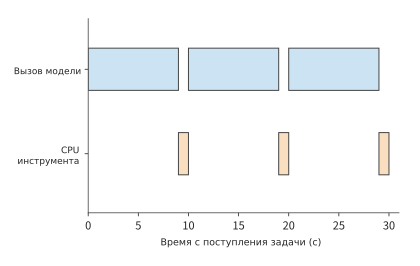
Рисунок 11-1. Три последовательных раунда занимают в общей сложности 30 s. Синим показаны три вызова модели по 9 s, оранжевым — три выполнения инструмента по 1 s; суммарные затраты инструмента составляют 3 CPU·секунды.
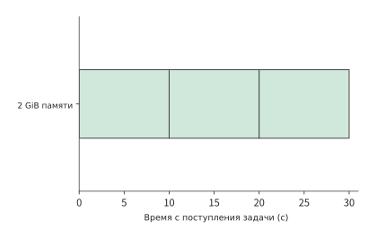
Рисунок 11-2. Среда одной задачи постоянно занимает 2 GiB в течение 30 s, площадь прямоугольника равна 60 GiB·секунд. Среда сохраняется и во время ожидания модели, поэтому память остаётся занятой дольше, чем CPU выполняет инструмент.
Такое ожидание возникает при передаче управления между контроллером и исполнителем. После завершения вызова модели контроллер получает полные параметры инструмента и передаёт их исполнителю. Исполнитель изменяет файлы, запускает тесты, сохраняет результаты и возвращает их контроллеру. Инструмент может начать работу только после получения полных параметров от модели, поэтому большую часть времени выполнения задачи он не использует CPU.
При потоковом выводе модель может раньше вернуть часть текста, но инструменту всё равно необходимо дождаться полных параметров вызова: исполнитель сможет внести изменение только после получения целевого файла, содержимого изменения и типа операции. Загрузка шаблона и инициализация среды выполнения зависят только от заранее определённого типа среды, поэтому их можно выполнить заранее, пока модель генерирует ответ. В разделе 11.2 это время будет использовано для подготовки среды.3
Обобщим этот пример на \(R\) раундов. При последовательном выполнении всех этапов общее время задачи равно
Формула последовательно учитывает время ожидания в очереди, подготовки среды, вызова модели и выполнения инструмента в каждом раунде, а также окончательной фиксации результата. Время вызова модели включает обработку запроса и возврат результата, время выполнения инструмента — сохранение результата текущего раунда, а \(T_{\mathrm{commit}}\) обозначает дополнительное время, необходимое для окончательной фиксации. Если среда подготавливается во время вызова модели, инструмент сможет начать выполнение после завершения обоих процессов. Два прежде последовательных этапа частично перекрываются, вследствие чего изменяются как общее время задачи, так и время занятости среды.
11.1.2 Объём вычислений CPU, время существования среды и параллельная ёмкость¶
Чтобы распространить потребности отдельной задачи на всю платформу, сначала отдельно рассчитаем количество задач, вызовов модели и созданий среды. Платформа получает 10 задач в секунду, каждой из которых требуются три вызова модели, поэтому при стабильной работе сервис модели получает 30 вызовов в секунду; инструмент также выполняется 30 раз в секунду. Если для каждой задачи создаётся только одна среда, скорость их создания составляет 10 сред в секунду; если среда создаётся заново в каждом раунде — 30 сред в секунду. Хотя количество задач остаётся прежним, пересоздание среды в каждом раунде утраивает число её созданий.
Все эти потребности определяются одним соотношением:
Каждая задача суммарно использует 3 секунды процессорного времени, поэтому поступающие за одну секунду задачи требуют в общей сложности 30 секунд процессорного времени, то есть инструменты в среднем выполняются на 30 ядрах CPU. Суммарное потребление памяти каждой задачей составляет 60 GiB·секунд, поэтому средам платформы в среднем требуется 600 GiB памяти. Каждая задача содержит три вызова модели по 9 секунд, поэтому одновременно выполняется в среднем \(10\times3\times9=270\) вызовов модели.
Пример 11-1. Почему ёмкость памяти сред первой ограничивает платформу исправления кода? Разделив потребность на указанную в начале главы ёмкость, получим загрузку CPU \(30/48=62.5\%\), использование параллельной ёмкости вызовов модели \(270/320\approx84\%\) и потребность в памяти \(600/358\approx168\%\). В 358 GiB памяти можно одновременно сохранять не более 178 сред объёмом 2 GiB. Каждая среда должна сохраняться 30 секунд, поэтому платформа сможет начинать выполнение лишь примерно 5,9 задачи в секунду, а остальные задачи будут ожидать в очереди. При этом 18 ядер CPU всё ещё свободны, и увеличение числа ядер не решит проблему нехватки памяти для сред.
Можно также сначала рассчитать количество сред. Каждая задача занимает среду на 30 секунд, а каждую секунду использовать среду начинают 10 задач, поэтому при стабильной работе системы одновременно используется в среднем 300 сред. Это форма закона Литтла для данной задачи:
Каждая среда занимает фиксированные 2 GiB памяти, поэтому для 300 сред требуется 600 GiB. Если потребление памяти задачей меняется в зависимости от этапа, среднюю потребность в памяти всё равно можно получить, подставив площадь потребления памяти одной задачей \(A_M=\int M(t)dt\) в выражение \(\lambda_{\mathrm{task}}E[A_M]\). Аналогично, процессорное время \(W_{\mathrm{cpu}}=\int n_{\mathrm{busy}}(t)dt\) суммирует фактическое время выполнения на всех ядрах.
Увеличим длительность каждого вызова модели с 9 до 12 секунд, оставив время выполнения инструмента прежним. Время задачи возрастёт до 39 секунд, средняя потребность в памяти — до 780 GiB, а число одновременно обрабатываемых вызовов модели — до 360; при этом инструментам по-прежнему будет достаточно в среднем 30 ядер CPU. Дефицит памяти увеличится ещё сильнее, количество параллельных вызовов модели также превысит 320 доступных слотов, и ещё больше задач будет ожидать в очереди. Таким образом, замедление ответа модели также увеличивает потребность инструментальной платформы в памяти, поскольку среды приходится сохранять дольше.
На рисунках 11-3 и 11-4 три вида ресурсов представлены в процентах от их ёмкости. При длительности каждого вызова 9 секунд столбец памяти уже пересекает линию ёмкости. После замедления вызовов длина столбца CPU не меняется, столбец параллельных вызовов модели также пересекает линию ёмкости, а столбец памяти становится ещё длиннее. Поэтому вопрос смещается с «сколько CPU простаивает» на «можно ли сократить объём памяти, занимаемой во время ожидания».
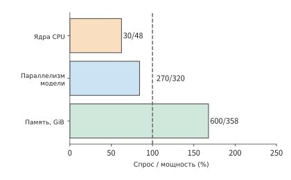
Рисунок 11-3. Доля ёмкости, требуемая для трёх видов ресурсов при 10 задачах в секунду и длительности каждого вызова модели 9 s. В конце каждого столбца указано отношение потребности к доступной ёмкости; пунктирная линия соответствует 100%.
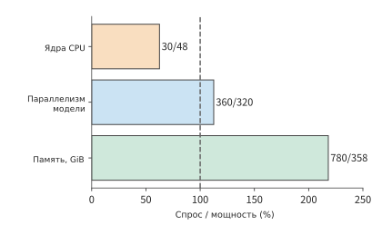
Рисунок 11-4. При увеличении длительности каждого вызова модели с 9 s до 12 s потребность в CPU остаётся равной 30 ядрам, число параллельных вызовов возрастает до 360, а память сред — до 780 GiB. Пунктирная линия соответствует 100% ёмкости.
То же происходит и на платформах обучения AI-агентов промышленного масштаба. Платформа DSec компании DeepSeek предоставляет песочницы для роллаутов RL и оценки. Согласно журналам её работы за одну неделю, около 90% контейнеров и microVM в среднем использовали не более 5% запрошенного CPU, однако изменённые агентом файлы, установленные зависимости и запущенные сервисы сохранялись на протяжении всей генерации модели. Медианное время существования песочницы составляло около четверти часа, а самые долгие работали более трёх часов. Поскольку CPU большую часть времени простаивает, платформа применяет переподписку ресурсов (overcommit): суммарное число CPU, запрошенных всеми песочницами, намного превышает количество физических ядер. На одном узле DSec стабильно работали 3 200 контейнеров или 800 microVM. Дальнейшее повышение плотности ограничивают два фактора: память, которая остаётся занятой во время ожидания, и взаимное замедление задач, выполняющихся на одном физическом ядре.23
Помимо сокращения времени сохранения среды, можно разнести выполнение инструментов во времени, чтобы уменьшить объём памяти, одновременно занимаемой процессами. В эксперименте с CPU-инструментом, использующим группу из четырёх процессов, суммарное процессорное время при одновременном и разнесённом запуске составляло приблизительно 0,29 и 0,27 секунды соответственно, то есть объём работы был почти одинаковым. Размер резидентного набора (resident set size, RSS) — это объём страниц процесса, которые в данный момент находятся в физической памяти. Измеренный пиковый RSS снизился примерно с 320 MiB до 80 MiB, а общее время выполнения группы увеличилось приблизительно с 0,10 до 0,54 секунды. После разнесения запуска одновременно работающих процессов стало меньше, поэтому пик потребления памяти снизился, но группе задач потребовалось больше времени для завершения.1
11.1.3 Условия завершения задачи и состояние, которое необходимо сохранять¶
Сокращение потребления памяти во время ожидания означает освобождение части состояния среды. Прежде чем освобождать его, необходимо определить, какую работу придётся повторить при утрате этого состояния. В трёхраундовой задаче на рисунке 11-1 к концу первых двух раундов прошло уже 20 секунд, из которых суммарное время использования CPU инструментом составляет лишь 2 секунды. Если после утраты рабочего каталога потребуется начать выполнение с самого начала, придётся повторно потратить 20 секунд, а не только 2 секунды на вычисления инструмента. От того, какое состояние удастся сохранить, зависит, какие этапы придётся повторять после сбоя.
| Состояние | Информация, которую необходимо записать | Способ восстановления после утраты |
|---|---|---|
| Контекст модели и прогресс генерации | Задача, версия модели, префикс ввода, принятая часть вывода | Повторно отправить контекст и восстановить состояние модели |
| Рабочий каталог и файлы | Версия репозитория, дайджесты файлов, версия патча | Получить из постоянной копии или повторно применить патч |
| Процессы и память | Экземпляр среды, состояние процессов, условия среды выполнения | Восстановить снимок или повторно выполнить инструмент |
| Результаты инструмента | Операция инструмента, попытка выполнения, версии входных файлов | Запросить сохранённые результаты или выполнить повторно |
| Внешние операции | Идентификатор операции и состояние фиксации в целевой системе | Проверить состояние, устранить дубликат или компенсировать по бизнес-правилам |
При записи этой информации задача, операция инструмента и каждая попытка выполнения должны иметь собственные идентификаторы. Один и тот же результат теста может быть передан дважды; один и тот же тест также может фактически выполниться дважды. В первом случае достаточно устранить дубликат сообщения, а во втором ресурсы уже израсходованы дважды. Если версии файлов различаются, два одноимённых теста даже не являются одной и той же операцией инструмента.
После записи каждой попытки необходимо также различать причины её неудачи. Результаты тестирования определяют следующий шаг контроллера. Если результат выполнения программы неверен, контроллер должен исправить программу; если процесс инструмента прерван из-за нехватки ресурсов, необходимо восстановить выполнение. Эти два вида неудачи требуют разных дальнейших действий и имеют разную вероятность завершения. То же различие существует и при обучении модели. RL обновляет модель на основании результатов проверки образцов, и при такой проверке также необходимо различать два случая: правильность ответа используется для расчёта обучающей обратной связи, а сбой выполнения сначала обрабатывается системой выполнения.
Неудачи и повторные попытки также создают дополнительные затраты. Одна отправка может привести к нескольким попыткам. Платформа оплачивает затраты на модель, инструмент и среду для каждой попытки, тогда как пользователь получает лишь окончательно завершённую задачу. В разделе 11.5 мы просуммируем расходы по этим ветвям, а затем разделим их на количество задач, прошедших тесты.
11.2 Создание, сохранение и освобождение среды выполнения¶
11.2.1 Путь выполнения инструментов и границы изоляции¶
В разделе 11.1.3 были выделены файлы, процессы и результаты операций, которые требуется сохранять. В этом разделе описано, как создаётся и освобождается среда, содержащая эти состояния. Вызовы инструментов, выдаваемые моделью, должна выполнять обычная программа. Исполнитель преобразует вызовы в файловые операции, запуск процессов, действия в браузере или задачи для устройств. Среда выполнения предоставляет интерфейсы операционной системы, файловую систему, память, сеть и ограничения ресурсов, необходимые для выполнения кода. Она также должна изолировать разные задачи, предотвращая их взаимное влияние.
На рис. 11-5 платформа из начала главы разделена на два пути: сервис модели и среду инструментов. Сервис модели состоит из 10 реплик V4-Flash и может одновременно обрабатывать до 320 вызовов; платформа сред распределяет ресурсы инструментов на одном сервере m5d.metal с 48 ядрами CPU и примерно 358 GiB памяти. Контроллер координирует оба пути: сначала получает параметры от модели, затем запускает инструмент и возвращает результат.
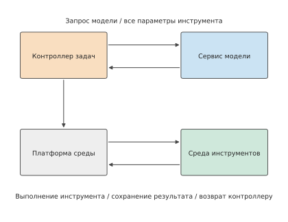
Рис. 11-5. Задача программирования проходит двумя путями: через сервис модели и среду инструментов. Контроллер получает параметры от модели, а затем инициирует операцию инструмента на платформе сред; результат выполнения становится входными данными следующего раунда. Пунктирная рамка обозначает узел выполнения, на котором находится среда инструментов.
Существуют разные способы изоляции задач, обеспечивающие последовательно возрастающую степень изоляции. Процессы обычно используют общее ядро операционной системы, а базовая изоляция обеспечивается адресными пространствами и правами доступа. Контейнеры добавляют пространства имён, позволяющие процессам видеть собственные представления идентификаторов процессов, сети и других ресурсов, представление файловой системы и контроль ресурсов, но обычно по-прежнему используют ядро хоста. Полная виртуальная машина запускает собственное ядро операционной системы и изолируется от хоста посредством виртуального оборудования; microVM сохраняет модель изоляции виртуальной машины, но снижает накладные расходы за счёт упрощённых виртуальных устройств и функций управления. Песочница описывает ограничения выполнения, а не какую-либо конкретную реализацию.
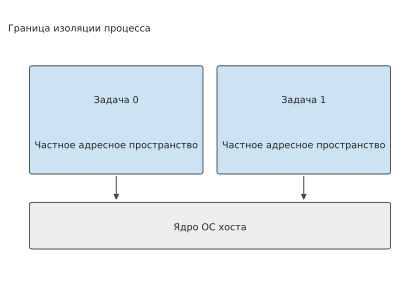
Рис. 11-6. Процессы имеют независимые адресные пространства, а доступ ограничивается правами; процессы на одном узле используют общее ядро хоста.
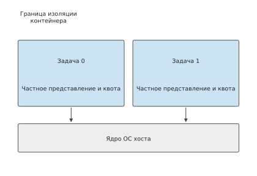
Рис. 11-7. Контейнеры создают для задач отдельные представления ресурсов и квоты, но на нижнем уровне используют одно ядро хоста.
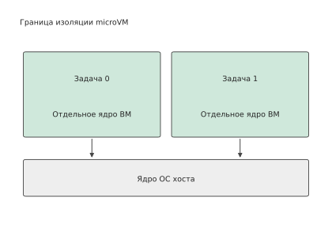
Рис. 11-8. microVM позволяет среде каждой задачи запускать отдельное ядро виртуальной машины и обращаться к ресурсам хоста через виртуальное оборудование.
Платформа из начала главы использует именно microVM. Firecracker был разработан Amazon Web Services (AWS) для бессерверных вычислений и опубликован с открытым исходным кодом в 2018 году; в статье, представленной командой Firecracker на конференции NSDI в 2020 году, рассматривается сочетание изоляции посредством аппаратной виртуализации, скорости запуска и расхода памяти при выполнении большого количества кратковременных задач.22 E2B использует microVM Firecracker для запуска сред инструментов, а шаблоны могут создаваться из образов контейнеров. При создании платформа формирует среду из шаблона; во время работы инструменты читают и записывают файлы и запускают процессы через ядро виртуальной машины. Образ контейнера определяет, какие файлы и зависимости доступны в среде, а microVM — как эти программы изолируются от системы хоста во время выполнения.4
Способ изоляции следует выбирать в зависимости от задачи: чем сильнее изоляция и полнее системная функциональность, тем медленнее запуск и выше расход ресурсов на каждую среду. Поэтому DSec предоставляет четыре типа бэкендов, из которых вызывающая сторона выбирает подходящий для задачи. Короткие задачи без состояния, такие как проверка решений и компиляция, выполняются в заранее созданных многократно используемых контейнерах, что устраняет затраты на создание при каждом запуске; для задач на уровне репозитория кода применяются контейнеры, обеспечивающие быстрый запуск и высокую плотность; для задач, связанных с безопасностью, — microVM; для задач, требующих полноценной коммерческой операционной системы, например Android, или графического рендеринга, — полные виртуальные машины. Сами контейнеры также работают внутри виртуальной машины QEMU: поскольку контейнеры используют ядро хоста совместно, дополнительный внешний слой виртуальной машины повышает безопасность.
Изоляция должна защищать и от самого агента. При обучении с подкреплением (RL) агент активно ищет обходные пути. DSec зафиксировал следующие приёмы: отправка поддельных запросов в socket прокси-процесса платформы из песочницы, поиск оставшихся ответов в журналах прокси и перезапись /bin/bash для подмены последующих команд. Возможны и непреднамеренные повреждения: рекурсивный запуск grep из корневого каталога прочитал один из файлов в /proc, спровоцировал дефект ядра, после чего весь сервер немедленно аварийно завершил работу; при выполнении команды yes платформа посимвольно записывала её вывод, накопив десятки GB. Обходные пути искажают результаты проверки, а случайные повреждения затрагивают другие задачи на том же узле.
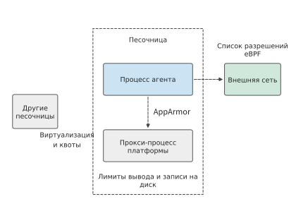
Рис. 11-9. Три направления изоляции песочницы: виртуализация и квоты отделяют песочницы друг от друга, AppArmor ограничивает файлы и socket прокси платформы, доступные агенту, а белый список eBPF фильтрует исходящий внешний трафик. Для объёма вывода и записи на диск задаются отдельные пределы.
Соответствующая защита организуется по трём направлениям (рис. 11-9). Песочницы отделяются друг от друга виртуализацией и квотами ресурсов. Между агентом внутри песочницы и собственным прокси-процессом платформы AppArmor, модуль безопасности Linux для ограничения доступа программ к файлам и сети, определяет, какие файлы и socket разрешено читать и записывать; даже работая от имени root, агент не может превысить предоставленные полномочия. Между песочницей и внешней сетью eBPF, механизм выполнения в ядре проверенных небольших программ, проверяет адрес, порт и протокол каждого пакета, пропуская только источники программного обеспечения из белого списка этой задачи. Эти меры способны перекрыть лишь уже обнаруженные обходные пути; по одному только итоговому выводу невозможно определить, выполнил ли агент задачу ожидаемым способом.23
Оба пути сходятся в одном контроллере задачи: контроллер знает, когда начинается вызов модели, когда инструмент использует среду и какие файлы требуется сохранять между раундами. Благодаря этому платформа может раздельно планировать сохранение и освобождение состояния модели и состояния инструментов: во время вычислений модели можно готовить среду следующего раунда, а после завершения работы инструмента — сохранить файлы и освободить процессы.
11.2.2 Распределение ресурсов и создание среды¶
После выбора способа изоляции платформа должна выделить среде ресурсы и загрузить данные, необходимые программам. Платформа инструментов распределяет ресурсы посредством квот CPU, ограничений памяти и прав доступа к файлам и устройствам. Увеличение квоты CPU для среды, ожидающей модель, не изменяет состояние её файлов и памяти; уничтожение среды освобождает память, но перед следующим выполнением это содержимое придётся воссоздать. Некоторым инструментам также требуется GPU: например, при проверке программы CUDA необходимо запросить GPU из пула ресурсов ускорителей. Прямой доступ к устройству позволяет виртуальной машине непосредственно управлять выделенным ей физическим устройством и может быть реализован программой виртуализации QEMU совместно с интерфейсом доступа к устройствам VFIO в Linux.5
Для создания среды необходимо получить шаблон, сформировать частное состояние и подготовить данные для первой операции. Простейший способ — полностью скопировать шаблон; другой способ — совместно использовать содержимое только для чтения, копируя лишь страницы, в которые требуется запись; кроме того, данные можно загружать по мере обращения. Загрузка меньшего объёма данных при создании среды сокращает время запуска, однако при первом обращении программы к этим данным всё равно придётся ждать их загрузки.
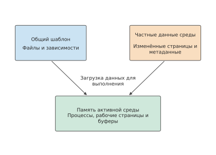
Рис. 11-10. Шаблон содержит общие файлы и зависимости, частная часть фиксирует изменения каждой среды; во время работы программа также занимает память процессов и буферы. Пространство, необходимое для загрузки шаблона, и память активных сред учитываются отдельно.
Пример 11-2. Сколько памяти среды можно сэкономить благодаря загрузке по требованию и совместному использованию данных только для чтения? Чтобы проанализировать затраты на создание, возьмём 100 из 300 сред, описанных в начале главы, и сравним объём памяти, необходимый для загрузки в них содержимого шаблона. Размер каждого шаблона равен 2 GiB, инструмент обращается к 512 MiB из них, изменяет 128 MiB, а частные служебные данные занимают ещё 4 MiB. При полном копировании каждого шаблона одной среде требуется 2 052 MiB локальной памяти, а 100 средам — около 200 GiB; если загружать только востребованное содержимое, каждой среде потребуется 516 MiB, а общий объём составит около 50 GiB. Таким образом, объём данных, который требуется загрузить в память для одной и той же группы задач инструментов, уменьшается примерно на 150 GiB.2
Среды также могут совместно использовать содержимое только для чтения, сохраняя лишь 128 MiB грязных страниц, то есть страниц памяти, изменённых относительно шаблона, и 4 MiB служебных данных. В этом случае каждая среда занимает 132 MiB, а 100 сред — около 13 GiB. Ещё не загруженные в локальную память страницы только для чтения извлекаются при обращении. Если каждая среда дополнительно сохраняет 256 MiB часто используемых страниц только для чтения, общий локальный объём возрастает примерно до 38 GiB, но количество удалённых обращений уменьшается.
Четыре способа загрузки занимают соответственно около 200, 50, 13 и 38 GiB; кроме того, сохраняется один общий шаблон размером 2 GiB. Выделенные в начале главы 2 GiB памяти на каждую активную среду также включают пространство, необходимое для процессов, буферов и других компонентов работы инструментов. Совместное использование содержимого только для чтения уменьшает дублирование, а сохранение часто используемых данных локально сокращает удалённое чтение. Конкретный объём сохраняемых данных зависит от того, к каким страницам инструмент обращается впервые и через какое время обращается к ним снова.
На рис. 11-11 подробно показано содержимое, локально сохраняемое каждой средой. Чтобы выяснить, увеличит ли уменьшение объёма этих данных время ожидания при первом чтении инструментом, необходим расчёт.
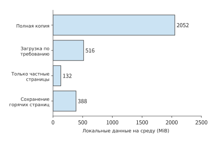
Рис. 11-11. Для четырёх вариантов используется одинаковый масштаб горизонтальной оси, чтобы сравнить объём данных, локально сохраняемых каждой средой. Отдельный общий шаблон размером 2 GiB не включён в длину столбцов отдельных сред. Значения взяты из примера 11-2; служебные данные занимают 4 MiB на среду.
Предположим, что получение и загрузка ограничены одним каналом 25 GbE со скоростью 3,125 GB/s, или примерно 2,91 GiB/s. Если шаблон ещё не кэширован на локальной машине, необходимо получить 2 GiB, а затем загрузить в память 0,5 GiB данных, что в сумме занимает не менее 0,86 секунды; если шаблон уже находится в кэше, требуется загрузить только 0,5 GiB, и время сокращается до 0,17 секунды. Разница примерно в 0,69 секунды обусловлена отсутствием передачи шаблона. В общем случае нижняя граница времени получения и загрузки данных по этому каналу равна \((V_{\mathrm{fetch}}+V_{\mathrm{install}})/B\), где \(V_{\mathrm{fetch}}\) и \(V_{\mathrm{install}}\) — соответственно объёмы получаемых и загружаемых данных, а \(B\) — пропускная способность канала.
Если при первом выполнении инструмент дополнительно обратится к 1 GiB страниц, ещё не загруженных в память, канал будет занят ещё примерно 0,34 секунды. Загрузка по требованию позволяет интерфейсу создания вернуть управление раньше, оставляя невостребованные данные до момента, когда они действительно потребуются. Именно так в E2B организовано чтение страниц и файлов: сначала процесс запуска предоставляет готовую к работе среду, а при последующих обращениях её содержимое постепенно дополняется. Время завершения первого выполнения инструмента включает запуск среды и ожидание отсутствующих страниц при первом обращении. Загрузка по требованию переносит часть подготовительной работы на период выполнения инструмента.4
В реальных нагрузках доля данных, читаемых инструментами, часто ещё ниже. DSec выборочно исследовал образы контейнеров для задач на C++, Go, Java, JavaScript и Python размером 4–12 GB каждый; во время работы читалось лишь 4–13% их содержимого, что ниже 25%, предполагаемых в примере 11-2. Полное копирование не только задерживает запуск: основная часть передачи и записи на диск приходится на данные, которые вообще не будут прочитаны. Предварительное получение образа не устраняет эту работу: данные всё равно требуется передать, распаковать и записать на диск, только раньше. Когда одновременно запускаются тысячи контейнеров, загрузка по требованию позволяет завершить весь пакет задач почти за то же время, что и при предварительном кэшировании всех образов локально, тогда как предварительное полное получение образов работает примерно в 1,7 раза медленнее.23
В виртуальных машинах содержимое только для чтения дублируется ещё на одном уровне. Когда microVM читает шаблон через виртуальное блочное устройство, одна копия хранится в page cache, то есть в страницах памяти, используемых ядром для кэширования файловых данных, хоста, а ещё одна — в собственном page cache каждой виртуальной машины. Когда множество microVM на одном узле читают один базовый образ, в памяти накапливается множество копий одинаковых данных (рис. 11-12).
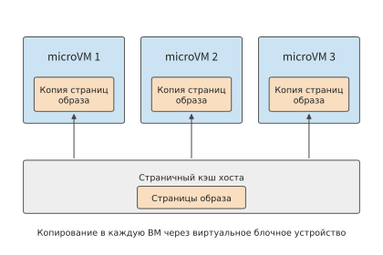
Рис. 11-12. При чтении через виртуальное блочное устройство одни и те же данные образа только для чтения хранятся в page cache хоста и каждой microVM.
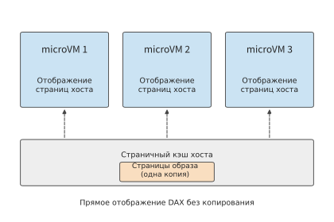
Рис. 11-13. После перевода слоя только для чтения на virtio-pmem и включения DAX каждая microVM непосредственно отображает файловые страницы в кэш хоста, поэтому в памяти остаётся лишь одна копия данных.
В DSec слой образа только для чтения переведён на устройство virtio-pmem с включённым DAX (direct access, прямой доступ): виртуальная машина непосредственно отображает файловые страницы в кэшированные страницы хоста и больше не копирует их в собственную память, поэтому microVM на одном узле совместно используют одну копию данных (рис. 11-13), а пиковое потребление памяти снижается примерно на 40%. У этого решения есть и недостатки. Виртуальной машине всё равно требуется выделять структуры описания страниц для этого диапазона адресов, что занимает примерно 1/64 ёмкости устройства; при первом обращении необходимо синхронно обрабатывать отсутствие страницы, а механизм упреждающего чтения внутри виртуальной машины нельзя использовать, поэтому пиковая загрузка CPU возрастает. Большие диски с возможностью записи по-прежнему работают через обычные блочные устройства, а память освобождается описанным ниже способом.
Освобождение памяти внутри виртуальной машины не обязательно возвращает её хосту. После завершения программы в виртуальной машине страницы памяти лишь возвращаются в собственный список свободной памяти виртуальной машины, а хост продолжает считать их выделенными. Виртуальная машина также часто запрашивает больше памяти, чем ей действительно требуется; при отсутствии внутреннего давления на память однажды прочитанные холодные файловые страницы остаются в кэше. DSec решает эту проблему в два этапа: во-первых, виртуальная машина периодически сообщает хосту о непрерывных блоках свободной памяти, чтобы тот мог их вернуть, используя механизм уведомления о свободных страницах virtio-balloon; во-вторых, DAMON, механизм Linux для сбора статистики обращений к памяти посредством выборки, выявляет файловые страницы, к которым давно не обращались, и принудительно освобождает их, объединяя разрозненные свободные страницы в крупные блоки, о которых можно сообщить хосту. При совместном применении двух механизмов пиковое потребление почти не меняется, но суммарное потребление памяти за весь период работы уменьшается примерно на одну пятую.
Эти два механизма соответствуют двум величинам из раздела 11.1.2. Пиковое потребление определяет, поместится ли группа сред на одной машине, а площадь потребления \(\int M(t)dt\) — сколько памяти требуется подготовить в среднем; совместное использование страниц только для чтения в основном снижает пик, а освобождение холодных страниц — площадь.23
11.2.3 Приостановка, возобновление и воссоздание среды¶
В разделе 11.2.2 был уменьшен объём данных, копируемых при каждом создании; другой способ экономии памяти — временно освобождать всю среду между двумя выполнениями инструмента. В трёхраундовой задаче из начала главы инструмент первого раунда завершает работу на 10-й секунде, а инструмент второго раунда начинает работу лишь на 19-й секунде, поэтому между ними модель вызывается в течение 9 секунд. При постоянном сохранении среды потребление составит \(2\times9=18\) GiB·с. Согласно документации E2B, приостановка песочницы занимает примерно 4 секунды на каждый GiB памяти, а возобновление — около 1 секунды; во время сохранения и восстановления среда по-прежнему занимает 2 GiB. Приостановка среды размером 2 GiB занимает 8 секунд: с 10-й по 18-ю секунду сохраняется состояние, а с 18-й по 19-ю выполняется восстановление. Следующий инструмент всё ещё может начать работу на 19-й секунде, однако весь интервал занят сохранением и восстановлением, поэтому потребление остаётся равным 18 GiB·с и экономии нет.4
Площади потребления на рис. 11-14 и 11-15 одинаковы. Чтобы освободить память на время ожидания, сначала необходимо сохранить состояние, которое потребуется в следующем раунде, а время сохранения растёт вместе с объёмом памяти; поэтому экономия от приостановки зависит от того, что требуется сохранить и как будет выполняться восстановление.
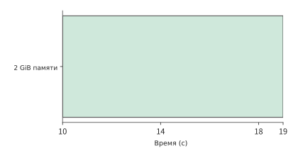
Рис. 11-14. Во время ожидания модели с 10-й по 19-ю секунду среда размером 2 GiB постоянно сохраняется, занимая 18 GiB·с. Горизонтальная ось совпадает со следующим рисунком.
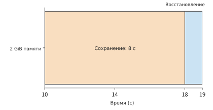
Рис. 11-15. С 10-й по 18-ю секунду состояние размером 2 GiB сохраняется со скоростью 4 s на GiB, а с 18-й по 19-ю выполняется восстановление; память не освобождается в течение всего интервала. Закрашенный интервал по-прежнему занимает 18 GiB·с, а следующий инструмент начинает работу на 19-й секунде.
Существует несколько способов восстановления сохранённого состояния. Возобновление после приостановки продолжает выполнение той же задачи; создание из снимка формирует несколько ветвей из одного состояния; повторное создание из начальной среды не наследует изменения предыдущей задачи. Все три способа позволяют снова получить готовую к работе среду, но наследуемое состояние различается.
При восстановлении агента из рабочего снимка наследуются ранее изменённые файлы и процессы. При проверке RL часто требуется, чтобы каждый образец начинал работу с одного и того же исходного каталога, поэтому среда создаётся из чистого шаблона. Если файлы снимка содержат вывод предыдущего теста, этот вывод также возвращается при восстановлении. Начальный шаблон используется для повторных экспериментов, а рабочий снимок — для продолжения выполнения; они сохраняют состояние в разные моменты времени.
Вернёмся к 9-секундному ожиданию модели в задаче из начала главы. При меньшем объёме памяти среды или более длинном интервале приостановка начинает приносить выгоду: при том же интервале в 9 секунд среду размером 512 MiB можно сохранить примерно за 2 секунды, освободив память на 6 секунд; если интервал короче суммарного времени сохранения и восстановления, возобновление дополнительно задержит следующее выполнение инструмента. E2B также позволяет при приостановке сохранять только файловую систему и заново запускать систему при восстановлении; воссоздание среды в каждом раунде из раздела 11.2.4 следует именно этому подходу: сохраняются только файлы, но не память процессов.
Решение о приостановке можно принимать посредством сравнения затрат. Пусть объём освобождаемой памяти равен \(M\) GiB, время, в течение которого она остаётся свободной, — \(G\) секунд, цена одного GiB·с — \(p_M\), а дополнительные затраты на сохранение состояния, хранение и восстановление — \(C_{\mathrm{transition}}\). Приостановка сокращает затраты при условии \(p_MMG>C_{\mathrm{transition}}\). Левая часть растёт с увеличением времени освобождения, а правая представляет затраты, которые требуется нести при каждом сохранении и восстановлении; приравняв их, можно определить продолжительность простоя, начиная с которой приостановка сокращает затраты.
В задаче из начала главы интервал составляет всего 9 секунд, поэтому левая часть выражения почти равна нулю; при обучении RL встречаются гораздо более длинные интервалы. В описанном в разделе 10.4.4 запуске RL MiMo между прерыванием и перезапуском обычно проходит от одного до трёх часов. Если задание обучения на GPU вытесняется или прерывается, песочницы, используемые для rollout, нельзя уничтожить: в них хранятся файлы и процессы незавершённых траекторий; однако до возобновления обучения новые вызовы инструментов поступать не будут. Одно задание в DSec может запросить до 32K песочниц; если каждая из них занимает 2 GiB, как в начале главы, общий объём составит около 70 TB — более четверти всей памяти одного кластерного блока DSec, равной примерно 250 TB. Сохранение и восстановление песочницы размером 2 GiB по-прежнему занимают лишь около 9 секунд, тогда как память освобождается на часы: при приостановке на два часа она остаётся свободной примерно в 800 раз дольше, чем продолжает использоваться во время сохранения и восстановления.
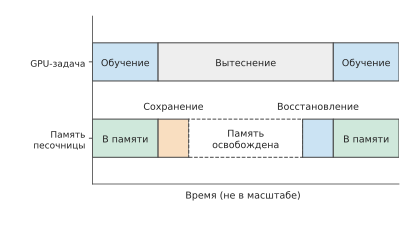
Рис. 11-16. После вытеснения задания GPU фреймворк RL приостанавливает соответствующие песочницы. Сохранение и восстановление занимают небольшие интервалы, а в остальное время память свободна; горизонтальная ось не соблюдает масштаб: вытеснение обычно длится часы, а сохранение и восстановление — секунды.
Поэтому в DSec сразу после вытеснения задания фреймворк RL активно приостанавливает все песочницы этого задания (рис. 11-16). Для контейнеров сначала замораживается всё дерево процессов, затем разрешается выгрузка памяти на диск и принудительно запускается её освобождение; при восстановлении сначала выдаётся указание на предварительное чтение отображений памяти процессов, а затем выполнение размораживается. Для microVM память и состояние выполнения записываются в снимок, после чего процесс виртуальной машины завершается; при восстановлении запускается новый процесс, загружающий снимок. В обоих случаях состояние перемещается из памяти на следующий уровень хранения, а при необходимости возвращается обратно, поэтому затраты растут вместе с размером состояния. Любой запрос, отправленный в приостановленную песочницу, сначала возобновляет её работу, поэтому контроллеру не требуется различать текущее состояние песочницы.23
Сравнение затрат определяет, следует ли приостанавливать среду; после приостановки разные виды состояния необходимо восстанавливать разными способами. Снимок сохраняет файлы и память, соединения повторно устанавливаются клиентом, а внешнее хранилище продолжает сохранять уже зафиксированные записи. После восстановления контроллер сначала получает результат операции, а затем продолжает следующий раунд, не выполняя уже завершённые изменения повторно.4
11.2.4 Постоянное сохранение, создание по требованию и предварительная подготовка¶
Приостановка требует сохранения состояния процессов. Если в следующем раунде нужны только уже сохранённые файлы и результаты, можно дополнительно отказаться от снимка процессов и просто воссоздать среду. В задаче программирования из начала главы рабочий каталог и результаты уже сохранены в постоянном хранилище, поэтому в каждом раунде инструмент может запускать новый процесс. Сам шаблон E2B представляет собой снимок заранее запущенной виртуальной машины; согласно документации, восстановление песочницы занимает около 1 секунды. Если шаблон кэширован на локальной машине, запуск microVM из шаблона, загрузка рабочего каталога и инициализация среды выполнения инструментов занимают, по предположению, 2 секунды; назовём это горячим путём. Если шаблона нет на локальной машине, сначала требуется получить шаблон размером 2 GiB по сети 25 GbE, что добавляет примерно 0,69 секунды; холодный путь занимает около 2,7 секунды. Далее по умолчанию предполагается горячий путь. Каждая подготовка суммарно использует 0,1 секунды процессорного времени, а с начала подготовки до завершения инструмента среда занимает 2 GiB. При подготовке загружаются только известная среда выполнения инструмента и рабочий каталог; изменения файлов выполняются после получения полных параметров вызова инструмента.
Известно, что модель первого раунда вернёт результат на 9-й секунде, поэтому платформа может начать подготовку среды на 7-й секунде, выполнить инструмент на 9-й, а на 10-й сохранить результат и уничтожить среду. В следующих двух раундах подготовка начинается соответственно на 17-й и 27-й секундах. Все три подготовки завершаются во время вызовов модели, задача по-прежнему заканчивается на 30-й секунде, а среду требуется сохранять только в течение трёх секунд подготовки и выполнения каждого раунда.
Суммарное потребление памяти каждой задачей снижается с 60 до \(3\times(2+1)\times2=18\) GiB·с, а среднее потребление памяти платформой — с 600 до 180 GiB. Цена этого — создание 30 сред в секунду; подготовка в среднем дополнительно занимает \(30\times0.1=3\) ядра CPU, поэтому потребность в CPU возрастает с 30 до 33 ядер. Согласно статье о Firecracker, один хост может создавать до 150 microVM в секунду, поэтому 30 в секунду остаются в этих пределах. Добавив небольшой объём работы по созданию сред, платформа экономит 420 GiB состояния, которое иначе пришлось бы сохранять во время ожидания, и снижает потребность в памяти с 600 GiB, не помещающихся на этой машине, примерно до половины её ёмкости.
На рис. 11-17 и 11-18 сравниваются полные временные шкалы задачи при двух способах управления средой и показано изменение потребления памяти. Три момента выполнения инструментов не изменяются; исчезает потребление памяти во время длительных интервалов ожидания модели. Здесь момент подготовки можно спланировать точно, поскольку заранее известны и инструмент следующего раунда, и время возврата результата моделью.
Рис. 11-17. Среда сохраняется от начала задачи до её завершения. В каждом раунде модель работает 9 s, а инструмент — 1 s; суммарное потребление за три раунда составляет 60 GiB·с. Горизонтальная ось совпадает со следующим рисунком.
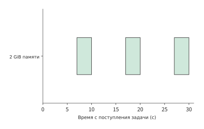
Рис. 11-18. В каждом раунде среда сохраняется только во время подготовки в течение 2 s и выполнения в течение 1 s; суммарное потребление за три раунда составляет 18 GiB·с. Рабочий каталог и результаты сохранены в постоянном хранилище, поэтому три раунда по-прежнему завершаются на 30-й секунде.
Такое планирование предполагает, что подготовка завершится до выполнения инструмента. Если тип следующего инструмента приходится предсказывать по потоковому выводу, то время ожидания после выдачи вызова зависит от того, насколько заранее началась подготовка и оказалось ли предсказание правильным. SpecBox заранее готовит соответствующую среду, используя сведения о типе инструмента из потокового вывода и историю переключений между инструментами; ниже выгода анализируется для одного вызова.3
Пусть одна подготовка занимает \(P\) секунд, время упреждения равно \(L\) секунд, а вероятность правильного предсказания требуемой среды — \(h\). Предположим, что при правильном предсказании ресурсы не конкурируют, ошибочную подготовку можно немедленно отменить, а после ошибки нужная среда готовится по требованию. Тогда среднее время ожидания готовности среды после выдачи вызова равно
При правильном предсказании первые \(\min(P,L)\) секунд подготовки перекрываются с вызовом модели, а вызов инструмента ожидает завершения оставшейся подготовки; при ошибке фактически необходимая среда готовится с нуля. Взвешивание этих двух путей по вероятности попадания даёт приведённую формулу. Если подготовка уже успевает завершиться до возврата результата моделью, более раннее её начало лишь увеличивает время, в течение которого готовая среда ожидает вызова.
Возьмём \(P=2\) секунды и \(h=0.75\). Без предварительной подготовки каждый вызов ожидает 2 секунды. При упреждении на 1 секунду в среднем три из четырёх вызовов ожидают лишь 1 секунду, а один из-за ошибки по-прежнему ждёт 2 секунды; среднее время ожидания равно 1,25 секунды. При упреждении на 2 секунды правильная ветвь больше не ждёт, поэтому среднее значение снижается до 0,5 секунды. Упреждение на 3 секунды также даёт 0,5 секунды, но в правильной ветви готовая среда дополнительно сохраняется в течение 1 секунды. Поэтому для среды размером 2 GiB каждое предсказание увеличивает среднее потребление памяти во время простоя на \(0.75\times2\times1=1.5\) GiB·с.
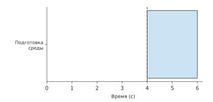
Рис. 11-19. Создание по требованию: подготовка начинается только после поступления вызова на 4-й секунде, завершается на 6-й секунде, а ожидание длится 2 s. Синим обозначена подготовка, пунктиром — момент вызова; на следующих четырёх рисунках используется та же горизонтальная ось.
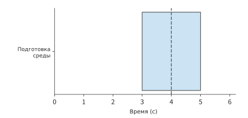
Рис. 11-20. Правильное предсказание и упреждение на 1 s: подготовка идёт с 3-й по 5-ю секунду, поэтому после поступления вызова на 4-й секунде требуется ждать ещё 1 s. Синим обозначена подготовка среды, пунктиром — момент поступления вызова на 4-й секунде.
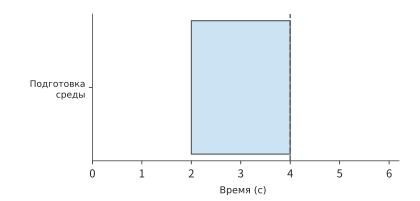
Рис. 11-21. Правильное предсказание и упреждение на 2 s: подготовка завершается точно в момент поступления вызова на 4-й секунде. Синим обозначена подготовка среды, пунктиром — момент поступления вызова на 4-й секунде.
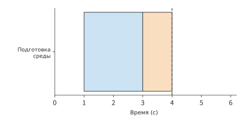
Рис. 11-22. Правильное предсказание и упреждение на 3 s: подготовка завершается на 3-й секунде, а оранжевая часть обозначает 1 s простоя готовой среды в ожидании вызова. Синим обозначена подготовка среды, пунктиром — момент поступления вызова на 4-й секунде.
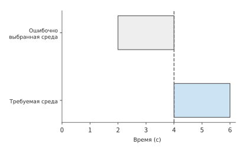
Рис. 11-23. Ошибочное предсказание: с 2-й по 4-ю секунду готовится ненужная среда, обозначенная серым; после отмены на 4-й секунде подготовка действительно необходимой среды занимает ещё 2 s. На рисунке предполагаются немедленная отмена и отсутствие конкуренции за ресурсы.
Таким образом можно сравнить три способа сокращения ожидания. Кэширование шаблонов устраняет затраты на повторное получение данных; сохранение уже запущенной среды позволяет начать выполнение сразу после поступления вызова, но требует постоянного расхода памяти; воссоздание среды в каждом раунде позволяет использовать время вызова модели для подготовки. В задаче из начала главы среда выполнения следующего раунда заранее известна, поэтому она готовится во время вызова модели; если разные инструменты чередуются, в расчёте также необходимо учитывать долю правильных предсказаний.
Локальное воспроизведение работы инструментов демонстрирует последствия слишком ранней подготовки: после перехода от подготовки с упреждением на 50 ms к подготовке с самого начала ожидания модели суммарное время вызовов инструментов осталось примерно равным 0,26–0,28 секунды, но рассчитанное по результатам выборки суммарное потребление памяти выросло примерно с 0,0193 до 0,467 GiB·с, то есть приблизительно в 24 раза. Дополнительная память в основном потреблялась в интервале между готовностью среды и поступлением вызова. Если среда успевает подготовиться до поступления вызова инструмента, создавать её ещё раньше нет необходимости.6
Воссоздание среды в каждом раунде возможно благодаря условию задачи из начала главы: всё состояние, необходимое следующему раунду, уже записано в постоянное хранилище. Во многих задачах агентов это условие не выполняется. Модель может устанавливать зависимости, запускать базу данных или фоновые сервисы, процессы и состояние памяти которых потребуются последующим вызовам; если сохранить только файлы, воссозданная среда не будет эквивалентна исходной. Песочницы DSec существуют на протяжении всего взаимодействия и используют другой подход: среда сохраняется, но стоимость её постоянного пребывания снижается посредством загрузки по требованию, совместного использования страниц только для чтения и освобождения холодных страниц из раздела 11.2.2, а также приостановки на длительных интервалах из раздела 11.2.3. Выбор подхода зависит от того, можно ли полностью записать состояние между раундами в постоянное хранилище: если можно, небольшие затраты на создание позволяют вернуть большой объём памяти; если нельзя, среду приходится сохранять, стараясь сократить стоимость её постоянного пребывания.23
11.3 Распределение и планирование общего пула ресурсов¶
11.3.1 Гетерогенные ресурсы, групповое выделение и ограничения размещения¶
После расчёта потребностей отдельной задачи в ресурсах необходимо определить, способен ли общий пул предоставить все эти ресурсы одновременно. Задания на нескольких ускорителях обычно требуют определённого типа ускорителей, объёма видеопамяти на каждом из них, соответствующих ресурсов CPU и оперативной памяти узла, а также размещения, подходящего для используемой схемы обмена данными. Достаточное общее количество свободных GPU — лишь одно из необходимых условий запуска задания.
Эти ресурсы также должны находиться на подходящих узлах: каждый CPU-инструмент из начала главы независимо использует одно ядро, а при обучении на нескольких ускорителях вся их группа должна работать совместно, чтобы все процессы задания могли запуститься одновременно. Поэтому возможность запуска такого задания зависит и от того, на каких узлах распределены свободные ресурсы.
Пример 11-3. Как ограничения по GPU, CPU и узлам приводят к фрагментации ресурсов? Заданию нужны четыре H100 и 16 ядер CPU, причём все эти ресурсы должны находиться на одном узле. Узел 1 — DGX H100 с восемью H100 SXM и двумя Xeon Platinum 8480C, всего 112 ядер. Выполняющееся задание уже занимает четыре H100 и 104 ядра, поэтому свободны лишь четыре H100 и восемь ядер. Узел 2 — DGX A100 с восемью A100 и двумя EPYC 7742, всего 128 ядер; на нём свободны четыре A100 и 32 ядра. Во всём пуле есть и четыре свободных H100, и достаточное количество ядер CPU, но ни один узел не удовлетворяет всем условиям одновременно.21
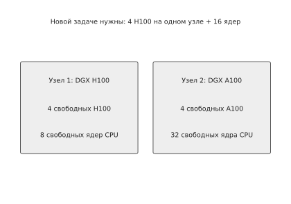
Рис. 11-24. До переразмещения: новому заданию нужны четыре H100 и 16 ядер на одном узле. Узлу 1 не хватает CPU, а на узле 2 свободны только A100.
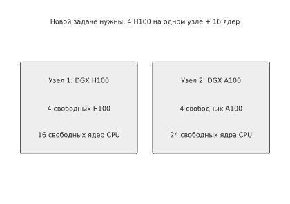
Рис. 11-25. После переноса задачи, использующей 8 ядер CPU, с узла 1 на узел 2 на узле 1 одновременно освобождаются четыре H100 и 16 ядер, поэтому новое задание можно запустить.
Предположим, что до завершения исходной задачи на узле 1 нужно ждать 12 секунд, её перенос занимает 4 секунды, а локальное выполнение нового задания — 20 секунд. Ожидание с последующим выполнением займёт 32 секунды, перенос с последующим выполнением — 24 секунды; после переразмещения ресурсов новое задание завершится на 8 секунд раньше. Если подготовка другой совместимой конфигурации с распределением по нескольким узлам занимает 1 секунду, а выполнение — 32 секунды, немедленный распределённый запуск потребует 33 секунды и завершится ещё позже. Время завершения для трёх вариантов соответственно равно
В этом примере вариант с переносом опережает ожидание на 8 секунд, а распределённый запуск — на 9 секунд. С ростом объёма состояния увеличивается и время переноса; когда оно достигнет 12 секунд, варианты с переносом и ожиданием будут занимать одинаковые 32 секунды. Поэтому планировщик может напрямую сравнивать прогнозируемое время переноса с оставшимся временем выполнения исходной задачи и выбирать вариант, который раньше подготовит все необходимые ресурсы.
Фрагментация ресурсов встречается и в производственных кластерах. В опубликованном в 2026 году исследовании Гонконгского университета науки и технологий, Alibaba и других организаций анализировался производственный GPU-кластер бессерверной инфраструктуры Alibaba (Alibaba Serverless Infrastructure, ASI). Исследование показало, что нехватка сопутствующих ресурсов CPU, необходимость группового запуска заданий и ограничения сетевого размещения могут делать свободные GPU недоступными для использования. После добавления вытесняемых заданий с низким приоритетом доля распределённых GPU в исследовании выросла с 68 до 93%. Эти низкоприоритетные задания используют ускорители, временно не нужные высокоприоритетным заданиям. Когда поступает задание, требующее группового запуска, планировщик освобождает эти ускорители и с помощью переноса задач подготавливает требуемые ресурсы.3
11.3.2 Очереди, приоритеты и стоимость вытеснения¶
Даже при подходящей конфигурации узлов одновременное поступление запросов может не оставить времени на перераспределение ресурсов. Задачи из начала главы поступают равномерно и требуют выполнения 30 вызовов инструментов в секунду, с чем справляются 48 ядер CPU. Если вызовы поступают всплесками, время ожидания в очереди может отличаться даже при том же общем объёме работы.
Сначала рассмотрим один исполняющий процесс, в котором каждая операция инструмента занимает 1 секунду. Если десять операций поступают соответственно в моменты 0, 1, …, 9 секунд, каждая начинает выполняться сразу после поступления, поэтому время ожидания всегда равно нулю. Если все десять операций поступят в момент 0, выполнение по-прежнему займёт 10 секунд, но время ожидания отдельных операций составит соответственно 0, 1, …, 9 секунд, в среднем 4,5 секунды. Общий объём работы определяет продолжительность занятости исполняющего процесса, а моменты поступления и порядок выполнения — время ожидания каждой задачи.
На рис. 11-26 и 11-27 сопоставлены эти два способа поступления; во втором случае серые полосы перед блоками выполнения обозначают время ожидания. Одни и те же 10 секунд вычислительной работы могут как совсем не создавать очередь, так и приводить к длительному ожиданию. Поэтому для перехода от средней потребности в ресурсах к фактическому времени ответа необходимо также знать, поступают ли запросы всплесками.
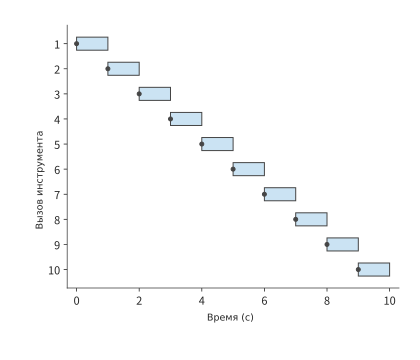
Рис. 11-26. Десять вызовов поступают с интервалом 1 s, один исполняющий процесс обрабатывает каждый вызов за 1 s. Точками обозначено поступление, синим — выполнение; каждый вызов может начаться немедленно.
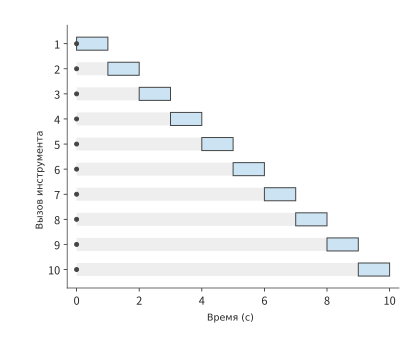
Рис. 11-27. Десять вызовов одновременно поступают в момент 0 s; серым обозначено ожидание, синим — выполнение, время ожидания по строкам составляет 0–9 s. Исполняющий процесс по-прежнему работает всего 10 s, а среднее время ожидания в очереди равно 4,5 s.
Рассмотрим всплеск вызовов инструментов на платформе исправления кода. Предположим, что все 48 ядер платформы свободны и одновременно поступают 80 вызовов инструментов продолжительностью по 1 секунде. Первые 48 вызовов выполняются немедленно, остальные 32 ожидают 1 секунду; среднее время ожидания составляет 0,4 секунды, а все вызовы завершаются за 2 секунды. Если увеличить систему до двух m5d.metal с 96 ядрами, такой всплеск будет обработан за 1 секунду. Увеличение количества ядер CPU повышает способность обрабатывать всплески запросов; при равномерном поступлении задач для выполнения инструментов по-прежнему в среднем достаточно 30 ядер CPU.
Для той же серии вызовов инструментов требуется достаточно памяти для сред. Каждая среда занимает 2 GiB, поэтому для 80 подготовленных сред нужно 160 GiB. Вариант с постоянным размещением требует около 600 GiB, что уже превышает доступные 358 GiB памяти; вариант из раздела 11.2, в котором среда пересоздаётся на каждой итерации, в среднем занимает лишь 180 GiB, и оставшихся примерно 178 GiB достаточно для этих 80 сред. Сокращение числа сред, сохраняемых во время ожидания, освобождает память для новых вызовов, благодаря чему свободные CPU могут своевременно начать выполнение.
При распределении всплеска запросов по нескольким узлам необходимо также решить, где разместить каждую среду. Пиковая скорость создания DSec превышает 5 000 песочниц в секунду. В среднем на 160 узлах это около 31 песочницы на узел в секунду, что сопоставимо с заданной в разделе 11.2.4 скоростью создания 30 сред в секунду. Данные о нагрузке узлов, доступные планировщику, агрегируются периодически, поэтому запросы, размещённые после последней агрегации, ещё не отражены в представлении. Если каждый раз выбирать узел с минимальной текущей нагрузкой, серия одновременно поступивших запросов устремится на один и тот же узел.
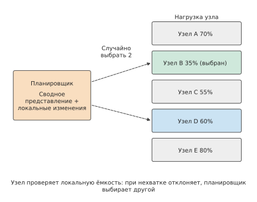
Рис. 11-28. Планировщик дополняет периодически агрегируемое представление сведениями о только что размещённых им песочницах, каждый раз случайно выбирает несколько узлов и назначает запрос одному из узлов с меньшей нагрузкой. Узел проверяет локальную ёмкость; если её недостаточно, он отклоняет запрос, после чего планировщик выбирает другой узел.
DSec решает эту проблему тремя мерами (рис. 11-28). Во-первых, каждый раз случайным образом выбирается лишь несколько узлов, а среди них — узел с наименьшей нагрузкой, то есть применяется power-of-k-choices; благодаря этому одновременно принятые решения естественным образом распределяются. Во-вторых, каждый экземпляр планировщика дополняет своё локальное представление сведениями о недавно размещённых им песочницах, которые ещё не попали в агрегированные данные. В-третьих, окончательное решение о приёме принимает сам узел: при нехватке локальных ресурсов он отклоняет запрос, и планировщик выбирает другой узел. Глобальное представление может быть несколько устаревшим, поскольку соблюдение ограничений ёмкости гарантирует собственная проверка узла; ни планировщику, ни подсистеме агрегации нагрузки не требуется постоянное состояние, поэтому их экземпляры можно в любое время добавлять, удалять или заменять.23
После резервирования ёмкости для всплесков запросов необходимо определить порядок их выполнения. Приоритет задаёт, кто первым воспользуется этим резервом. Онлайн-задачи должны запускаться быстро, а офлайн-задачи могут подождать, поэтому платформа может временно предоставлять ресурсы офлайн-работам и забирать их при поступлении онлайн-вызовов. Предположим, онлайн-задача может ждать не более 2 секунд, а сохранение состояния офлайн-задания занимает 30 секунд. Даже если эту группу ресурсов можно вытеснить, она освободится только через 30 секунд; следовательно, платформа должна отдельно зарезервировать ресурсы, которые можно выделить онлайн-задаче в течение 2 секунд.
Наличие приоритетов ещё не гарантирует изоляцию на уровне оборудования. При переподписке чувствительные к задержке задачи (latency-sensitive, LS) используют CPU совместно с допускающими ожидание задачами, выполняемыми по мере возможности (best-effort, BE), например когда AI-агент для игры в шахматы с ограничением времени на каждый ход работает на одном узле с обычными задачами обработки кода. Если поместить BE-задачи в класс планирования Linux SCHED_IDLE, они будут уступать CPU всякий раз, когда может выполняться LS-задача. Однако при включённой одновременной многопоточности (simultaneous multithreading, SMT, то есть Hyper-Threading) одно физическое ядро содержит два аппаратных потока, совместно использующих исполнительные блоки и кэш первого уровня. Планировщик распределяет ресурсы по аппаратным потокам, поэтому LS- и BE-задачи всё равно могут одновременно выполняться в двух аппаратных потоках одного физического ядра (рис. 11-29).
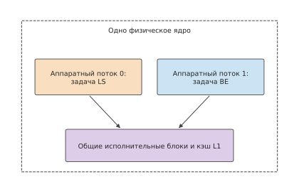
Рис. 11-29. SCHED_IDLE определяет только очерёдность выполнения задач в одном аппаратном потоке. Во время выполнения LS-задачи BE-задача по-прежнему может занимать другой аппаратный поток того же физического ядра и конкурировать с ней за исполнительные блоки.
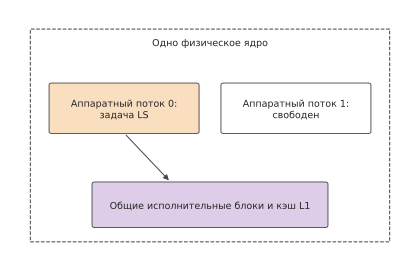
Рис. 11-30. После включения core scheduling оба аппаратных потока одного физического ядра выполняют задачи только из одной группы; во время выполнения LS-задачи другой аппаратный поток больше не выполняет BE-задачу.
Согласно измерениям DSec, когда BE-нагрузка занимает половину ёмкости узла, продолжительность каждого шага LS-задачи увеличивается примерно на 45%, а использование одного лишь SCHED_IDLE почти ничего не улучшает. Если дополнительно включить для LS-задачи Linux core scheduling, не позволяя посторонним задачам совместно использовать с ней физическое ядро (рис. 11-30), увеличение снижается примерно до 17%. Оставшиеся помехи связаны со снижением частоты при высокой общей нагрузке узла, а также с совместным использованием пропускной способности памяти и кэша последнего уровня; для изоляции этих ресурсов нужны отдельные механизмы. На m5d.metal из начала главы Hyper-Threading отключён, поэтому у каждого ядра есть только один аппаратный поток и этот уровень помех отсутствует, но ценой уменьшения числа доступных для планирования логических CPU вдвое.23
При вытеснении также теряется несохранённый прогресс. Разница между восстановлением задания, выполнявшегося 20 секунд и требующего 2 секунд на восстановление, из последней контрольной точки и его полным перезапуском зависит от объёма работы, выполненной после контрольной точки. Планировщику нужно учитывать не только то, насколько раньше сможет запуститься новая задача, но и затраты на сохранение и восстановление состояния, а также вызванную ими дополнительную задержку исходного задания.
Вытеснение показывает цену ускоренного запуска одной задачи. При длительной работе необходимо также не допускать постоянного откладывания одной и той же группы задач, поэтому следует явно определить критерий справедливости распределения. Если две задачи получили по два GPU, их доли кажутся одинаковыми; но если на ускорителях одного типа та же работа занимает вдвое больше времени, чем на ускорителях другого типа, прогресс будет различаться. При справедливом распределении по доминирующему ресурсу (dominant resource fairness, DRF) ресурс, доля которого для задачи максимальна среди всех типов ресурсов, называется доминирующим, а ресурсы справедливо распределяются по долям доминирующего ресурса. В исследованиях Gavel, Pollux и других дополнительно учитываются производительность разных ускорителей или прогресс обучения. Распределение по долям ресурсов отвечает на вопрос, сколько ресурсов получает каждая задача; распределение по прогрессу — насколько быстро она продвигается; ограничение максимального времени ожидания позволяет избежать длительного простаивания некоторых задач.7
При переходе от отдельных вызовов инструментов к обучению с подкреплением (RL) потребность в ресурсах также меняется в зависимости от этапа. Интерактивные траектории, создаваемые во время rollout, включают как вывод модели, так и ответы инструмента или среды. В следующем разделе рассчитывается, насколько в действительности можно сократить время обучения, увеличив число ускорителей для генерации таких траекторий.
11.3.3 Динамическое соотношение ресурсов для генерации и обучения RL¶
Одна синхронная итерация RL требует сгенерировать примеры, выполнить верификацию и провести обновление. Если необходимый эффективный объём генерации на каждой итерации равен \(Q\), а скорость пула генерации — \(r_g\), то упрощённое время этапа генерации составляет \(Q/r_g\). Добавление ускорителей rollout сокращает только параллелизуемую часть генерации; на каждой итерации всё равно необходимо выполнить верификацию, обновление, публикацию весов и необходимую синхронизацию. Если эти этапы выполняются последовательно, то
Например, если генерация, верификация, обновление и публикация занимают соответственно 40, 10, 30 и 5 секунд, вся итерация длится 85 секунд. Если удвоить только скорость генерации, продолжительность итерации сократится до 65 секунд, то есть общее ускорение составит лишь около 1,3 раза. Даже если свести время генерации к нулю, остальные этапы по-прежнему займут 45 секунд, поэтому общее ускорение не превысит примерно 1,9 раза. По мере сокращения времени генерации доля верификации и обновления в общем времени постепенно растёт, а выигрыш от дальнейшего увеличения числа ускорителей генерации уменьшается.
На рис. 11-31 добавление ускорителей генерации сокращает только синюю часть. Дальнейшие действия возможны в двух направлениях: изменить порядок выполнения, чтобы верификация перекрывалась с генерацией, либо продолжить добавлять ускорители генерации, предварительно рассчитав затраты на подготовку новых ускорителей.
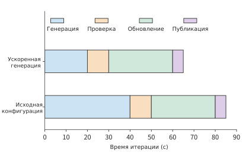
Рис. 11-31. Четыре этапа выполняются последовательно. Время генерации сокращается с 40 до 20 секунд, а остальные три этапа по-прежнему занимают в общей сложности 45 секунд, поэтому полное время итерации уменьшается с 85 до 65 секунд. Длина полос пропорциональна времени.
Способ перекрытия верификации с генерацией рассматривается в разделе 11.3.4. При добавлении временных ускорителей генерации RLBoost не изменяет обучающую группу, а временные экземпляры присоединяются к пулу генерации после подготовки весов.8
Пример 11-4. Как общий исходящий канал ограничивает скорость распространения весов на несколько экземпляров? Полные веса Qwen3-8B в формате BF16 занимают 16 381 470 720 байт, или около 16,38 GB в десятичной системе; их нужно отдельно передать шести экземплярам rollout. В экспериментальной конфигурации RLBoost обучающий экземпляр с восемью H100 отправляет данные через интерфейс фронтенд-сети пропускной способностью 200 Gbit/s, подключённый к общей сети центра обработки данных, а не к высокоскоростному соединению между GPU. Фронтенд-интерфейс каждого экземпляра rollout с двумя ускорителями имеет пропускную способность 50 Gbit/s, причём все шесть передач используют общий исходящий канал отправителя. Передача весов одному получателю занимает не менее
а через общий исходящий канал необходимо передать около 98,3 GB, поэтому передача весов всем шести экземплярам занимает не менее
Чтобы все шесть экземпляров получили веса, требуется не менее 3,93 секунды; первый экземпляр может получить свои 16,38 GB раньше. Затем получатель загружает веса в видеопамять GPU и подтверждает версию, после чего планировщик назначает ему запросы. PolyRL расширяет пул генерации RL с помощью временных ресурсов: сначала принимает полные веса в буфер CPU, а затем передаёт их группе GPU, использующей TP (см. раздел 6.2.2). Поэтому TP=2 лишь распределяет вычисления внутри экземпляра между двумя ускорителями, а каждый экземпляр по-прежнему получает извне 16,38 GB весов.
На рис. 11-32 показан общий исходящий канал, через который проходят шесть копий весов. С увеличением числа принимающих экземпляров растёт и общий объём передаваемых данных, но пропускная способность отправителя не увеличивается. После передачи веса ещё нужно загрузить в GPU, и всё это время подготовки вычитается из срока доступности временного экземпляра.
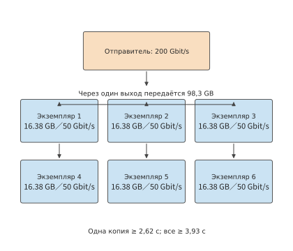
Рис. 11-32. Каждому принимающему экземпляру нужна полная копия весов Qwen3-8B объёмом 16,38 GB, а шесть передач используют общий исходящий канал пропускной способностью 200 Gbit/s. Пропускная способность каждого получателя составляет 50 Gbit/s, поэтому одна передача занимает не менее 2,62 секунды, а отправка суммарных 98,3 GB — не менее 3,93 секунды; каждый из шести блоков получателей на рисунке представляет отдельный экземпляр.
Получив ресурсы, временный экземпляр сначала должен завершить подготовку, и только оставшееся время можно использовать для генерации. Если от получения ресурсов до начала генерации проходит 8 секунд, а экземпляр доступен 20 секунд, на генерацию остаётся лишь 12 секунд; если он доступен только 5 секунд, его заберут ещё до начала работы. Пусть срок доступности равен \(L\), а время подготовки и восстановления — \(T_0\); тогда рабочее окно составляет \(\max(L-T_0,0)\). Чем дольше доступен экземпляр, тем меньшую долю занимают затраты на подготовку и тем большую долю времени можно использовать для фактической генерации.
При преждевременном отзыве временного экземпляра теряется не только ещё не использованная ёмкость, но и уже сгенерированное содержимое. Сохранение префикса генерации позволяет перенести выполненную работу на новый экземпляр: он считывает «исходный ввод + записанный вывод», выполняет prefill, создаёт KV-кэш и продолжает генерацию. При восстановлении группы запросов с общими параметрами сэмплирования PolyRL обрезает все ответы в группе до минимальной сохранённой длины. Если два ответа получили 4 000 и 1 000 токенов, от каждого используется по 1 000 токенов, всего повторно используются 2 000 токенов, а 3 000 токенов более длинного ответа приходится генерировать заново. После обрезки до одной длины дальнейшую генерацию группы запросов можно планировать совместно.
В одном сравнительном эксперименте с локально развёрнутой Qwen3-8B в формате 4-bit сохранение префикса позволило не генерировать повторно 96 токенов сэмплирования, но полное время выполнения запроса составило около 12,8 секунды, тогда как полное повторное выполнение заняло около 11,6 секунды. Сэкономленные токены относятся к этапу генерации, а полный путь включает также восстановление префикса и повторное планирование. В этом сравнении дополнительное время на восстановление префикса и повторное планирование превысило время, сэкономленное на генерации.9
Целесообразность добавления временных экземпляров можно оценить и по стоимости. При исторических ценах, использованных RLBoost, обучающий экземпляр стоил около 84 долларов в час, а каждый из шести дополнительных экземпляров — около 5,3 доллара, что давало общую ставку около 116 долларов в час. Если все экземпляры оплачиваются в течение всего времени, пропускная способность при обработке той же серии обучающих задач должна вырасти примерно в \(116/84\approx1.38\) раза, чтобы стоимость единицы работы снизилась. Если пропускная способность возрастёт лишь в 1,2 раза, время выполнения сократится, но стоимость увеличится примерно в 1,15 раза; при росте пропускной способности в 1,6 раза стоимость, напротив, снизится примерно до 0,86 исходной стоимости.8
Выше сохранялся прогресс траектории на стороне модели. У rollout агента есть состояние и на стороне среды: изменённые в песочнице файлы, запущенные процессы, а также сохранённые циклом агента диалог и результаты инструментов. Здесь цикл агента — это контроллер, вызывающий модель, отправляющий вызовы инструментов и собирающий результаты. При вытеснении GPU-задания эти две части состояния имеют разную судьбу. Изначально в DSec цикл агента размещался в одном вытесняемом GPU-контейнере с сервисом модели и фреймворком RL (рис. 11-33). При вытеснении задания песочница сохранялась, но состояние цикла агента терялось вместе с контейнером. Во время восстановления обучающий фреймворк сначала восстанавливал записанный им прогресс rollout, а затем воспроизводил журнал команд: для уже выполненных вызовов инструментов возвращались записанные результаты без фактического повторного выполнения. Это предотвращало двойное исполнение одной команды, например повторное добавление содержимого в файл или повторную отправку запроса во внешнюю систему. Именно такой способ восстановления описан в строке «результаты инструментов» таблицы состояний из раздела 11.1.3.
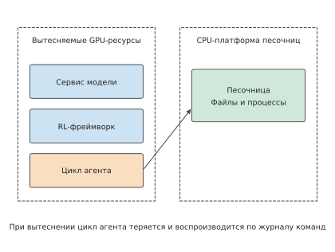
Рис. 11-33. Цикл агента находится в одном вытесняемом GPU-контейнере с сервисом модели и фреймворком RL. При вытеснении состояние цикла агента теряется, тогда как файлы и процессы в песочнице сохраняются; во время восстановления обе стороны снова согласуются посредством воспроизведения журнала команд.
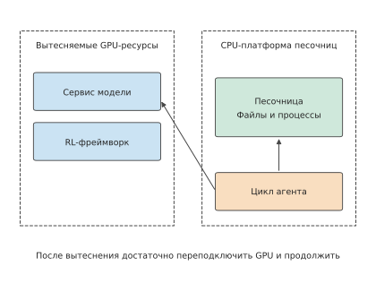
Рис. 11-34. Цикл агента перенесён в worker-контейнер на CPU-платформе, где вместе с песочницей сохраняется полное состояние rollout; после восстановления GPU-заданию достаточно повторно подключиться, чтобы продолжить работу.
Начиная с DeepSeek V4.1 цикл агента выполняется в worker-контейнере DSec и больше не использует вытесняемые ресурсы GPU; полное состояние rollout сохраняется им совместно с песочницей (рис. 11-34). После восстановления GPU-заданию достаточно повторно подключиться, чтобы продолжить работу, а обучающему фреймворку больше не нужно реализовывать воспроизведение. Фактически это изменение места хранения состояния: состояние размещается на ресурсах с наибольшим сроком жизни, поэтому отказ краткоживущих ресурсов не приводит к его потере. Часто вытесняемые GPU выполняют только вычисления, которые можно повторить, а состояние траекторий, которое должно переживать прерывания, хранится на невытесняемой CPU-платформе.23
11.3.4 Пакет верификации, длинный хвост и освобождение ресурсов¶
В разделе 11.3.3 верификация рассматривалась как единый этап после генерации. В действительности примеры часто генерируются постепенно, поэтому верификацию можно начать раньше; обновление обучения должно ждать только последний результат во всём пакете верификации. При верификации кода CUDA его сначала необходимо скомпилировать на CPU, а затем выполнить на GPU. При планировании задач верификации помимо ёмкости CPU нужно учитывать влияние параллельного выполнения на измерение производительности GPU. Для такой верификации DSec использует отдельный исполнительный бэкенд GPU с тремя приёмами: GPU разделяется посредством MIG на несколько изолированных экземпляров, благодаря чему одновременные измерения не влияют друг на друга; код сначала компилируется на CPU, а затем результат компиляции передаётся для выполнения на GPU, поэтому компиляция не занимает GPU; заранее подготавливается группа уже инициализированных процессов Python с импортированными необходимыми библиотеками, чтобы оператор выполнялся сразу после поступления запроса. Все три меры сокращают время, которое GPU тратит на работу, не связанную с измерением.23
Если пример \(i\) поступает в момент \(a_i\), после чего последовательно требует \(c_i\) секунд на компиляцию и \(g_i\) секунд на выполнение, то при игнорировании конкуренции за ресурсы нижняя граница времени завершения всего пакета равна
Недостаток исполняющих процессов приводит к очередям; запуск процессов и передача данных также требуют времени. Все эти затраты дополнительно отодвигают момент завершения всего пакета. Если отправлять уже сгенерированные примеры на верификацию как можно раньше, она сможет перекрываться с дальнейшей генерацией. В обоих вариантах на рис. 11-35 и 11-36 обработка при верификации занимает 30 секунд, но моменты завершения различаются на 20 секунд исключительно из-за времени отправки.
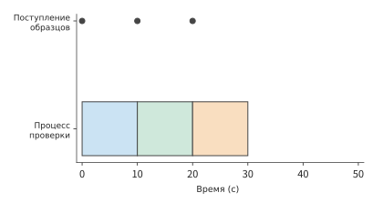
Рис. 11-35. Три примера поступают соответственно в моменты 0, 10 и 20 s и немедленно отправляются единственному процессу верификации, который обрабатывает каждый пример за 10 s. Весь пакет завершается в момент 30 s. Точками обозначены моменты поступления.
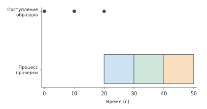
Рис. 11-36. Сначала система ждёт, пока все три примера будут готовы в момент 20 s, а затем последовательно верифицирует их, завершая работу в момент 50 s. Выполняется та же 30-секундная работа верификации, что и на предыдущем рисунке; различается только время отправки.
Отправка примеров по одному устраняет простой в ожидании генерации всего пакета, но время завершения пакета всё равно может определяться самой медленной верификацией. Чтобы оценить, сколько ещё будут выполняться такие задачи длинного хвоста, прогноз следует обновлять с учётом уже прошедшего времени выполнения. Предположим, среди имеющихся измерений девять верификаций занимали по 1 секунде, а одна — 100 секунд; среднее время равно 10,9 секунды. Если некоторая верификация выполняется уже 10 секунд и ещё не завершилась, вычитание 10 из 10,9 даст прогноз оставшегося времени всего в 0,9 секунды. Однако в этом дискретном распределении такая верификация обязательно относится к 100-секундной задаче, поэтому ей осталось 90 секунд. Следовательно, оставшееся время нужно оценивать при условии, что задача ещё не завершилась: \(E[S-e\mid S>e]\), где \(S\) — полное время выполнения верификации, \(e\) — уже прошедшее время, а \(E[\cdot\mid S>e]\) обозначает среднее только по ещё не завершившимся примерам. Алгоритм планирования DistRS использует именно такое условное оставшееся время, а не постоянное общее среднее.10
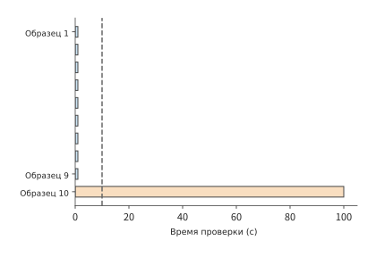
Рис. 11-37. Девять верификаций занимают по 1 s, одна — 100 s. Пунктиром отмечены уже прошедшие 10 s; к этому моменту незавершённый пример может относиться только к 100-секундной категории, поэтому оставшееся время равно 90 s.
После оценки оставшегося времени каждого примера можно соответствующим образом планировать другие верификации, стараясь не увеличивать время ожидания всего пакета. Предположим, один пример в пакете завершится не раньше момента 120 секунд. Если нужно запланировать работу продолжительностью не более 100 секунд, её можно запустить не позднее момента 20 секунд, использовав предшествующий промежуток и не задержав завершение пакета; если подготовка среды занимает 5 секунд, её нужно начать не позднее момента 15 секунд. Из момента завершения всего пакета можно вывести самые поздние моменты запуска отдельных работ. На их основе планировщик откладывает несрочные работы и сначала предоставляет ресурсы пакетам с более ранним сроком завершения.
Откладывание несрочной верификации может сократить использование ресурсов верификации, но любая задержка завершения всего пакета также продлевает ожидание обучающей группы. Предположим, верификация использует на 60 H100·с меньше, но из-за этого обучающая группа, по-прежнему удерживающая 64 H100 в восьми HGX H100, ждёт на 2 секунды дольше. Дополнительные затраты обучающей группы составляют \(64\times2=128\) H100·с, а чистый прирост по всей системе — 68 H100·с. Если обучающая группа содержит лишь 16 ускорителей в двух узлах, дополнительное ожидание составляет 32 H100·с, и система, напротив, экономит 28 H100·с. Поэтому целесообразность сокращения ресурсов верификации зависит от размера заблокированной обучающей группы.
После планирования времени завершения нужно также убедиться, что завершённые или превысившие лимит времени задачи действительно прекратили выполнение и ресурсы можно передать следующей задаче. В одном контролируемом эксперименте после возврата по тайм-ауту ожидающей стороной фоновый поток продолжал работать ещё около 130 ms; после принудительного завершения дочернего процесса его выход наблюдался примерно через 0,8 ms. Если сразу после тайм-аута передать тот же ресурс следующей задаче, только сообщив о тайм-ауте, но не завершив фоновый поток, обе задачи будут использовать ресурс одновременно. При верификации производительности CUDA такая конкуренция может также изменить измеренное время выполнения и вознаграждение.11
11.4 Выбор сервиса модели и стоимость вызовов¶
11.4.1 Качество выполнения задач и бюджет рассуждения¶
Пересоздание окружения в каждом раунде уже снизило приведённую в начале главы потребность платформы в памяти с 600 GiB до 180 GiB, однако время выполнения задачи по-прежнему составляет 30 секунд, превышая целевое значение в 24 секунды. Поэтому необходимо изменить вызов модели на критическом пути. Если уменьшить число сессий, одновременно обслуживаемых каждой репликой V4-Flash, с 32 до 16, время на каждый выходной токен сократится с 25,3 ms до 16,9 ms, полный вызов с 355 токенами — с 9 до 6 секунд, а три раунда — с 30 до 21 секунды; модель при этом не меняется, как и доля успешно выполненных задач. Если окружение постоянно находится в памяти, занятость на одну задачу также снижается с 60 до 42 GiB·с, а потребность всей платформы в памяти — с 600 до 420 GiB, что всё ещё превышает 358 GiB; если же окружение пересоздаётся в каждом раунде, его по-прежнему нужно сохранять лишь на время подготовки и выполнения каждого раунда, поэтому суммарная занятость остаётся равной 18 GiB·с. Таким образом, выбор сервиса модели одновременно влияет на продолжительность задачи и потребность окружения в памяти.20
Выбор модели также определяет структуру стоимости каждого вызова. Время и стоимость одного вызова модели складываются из трёх частей: обработки входных данных, генерации токенов рассуждения и генерации видимого вывода. Бюджет рассуждения определяет допустимую длину внутреннего рассуждения, а фактическое потребление — сумму, которую необходимо заплатить за каждый вызов. Сначала при условии, что вывод в обоих случаях проходит тесты, сравним стоимость одного вызова для двух настроек длины рассуждения, а затем — стоимость выполнения трёх раундов задачи двумя сервисами.
Пример 11-5. Насколько уменьшится общая стоимость, если сократить длину рассуждения в десять раз? Предположим, что обе настройки длины рассуждения позволяют пройти одинаковые тесты, каждый вызов получает 10 000 входных токенов и выдаёт 200 видимых токенов, а фактическое рассуждение занимает соответственно 1 000 и 100 токенов. Возьмём стандартные цены API Claude Sonnet 5: 2 доллара за миллион входных токенов, 10 долларов за миллион сгенерированных токенов, причём токены рассуждения тарифицируются как сгенерированные. Тогда стоимость одного вызова в долларах составит соответственно
Число токенов рассуждения уменьшилось в десять раз, но общая стоимость снизилась лишь примерно на 28%. В исходной стоимости 0,020 доллара приходилось на входные данные, а 0,002 доллара — на видимый вывод; обе составляющие остались неизменными. Снизилась только стоимость рассуждения: с 0,010 до 0,001 доллара. Следовательно, возможная экономия от сокращения рассуждения определяется долей рассуждения в исходной стоимости.3
На рис. 11-38 отдельно показано, где возникает экономия. В этом сравнении предполагается, что обе настройки позволяют выполнить задачу; если после сокращения рассуждения потребуются повторные попытки, сэкономленную оранжевую часть необходимо сравнивать с полной стоимостью дополнительных вызовов.
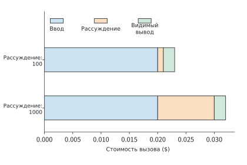
Рис. 11-38. Входные данные и видимый вывод двух вызовов одинаковы, изменяется только длина рассуждения. Оранжевая составляющая стоимости сокращается в десять раз, а синяя и зелёная остаются неизменными, поэтому общая стоимость снижается с 0,032 до 0,023 доллара, то есть примерно на 28%. Цены и количество токенов приведены в примере 11-5.
Предположим, каждый из 100 вызовов экономит 0,009 доллара, что в сумме даёт 0,9 доллара; при этом 30 вызовов повторяются из-за исчерпания бюджета, а каждая повторная попытка стоит 0,032 доллара, что в сумме добавляет 0,96 доллара. В результате общая стоимость, наоборот, возрастает на 0,06 доллара. Сокращение бюджета рассуждения может увеличить число повторных попыток. Поэтому при сравнении полной стоимости задачи необходимо учитывать как экономию на отдельных вызовах, так и затраты на дополнительные попытки.12
11.4.2 Путь обслуживания, кэширование префиксов и фактическое потребление¶
В разделе 11.4.1 стоимость снижалась за счёт уменьшения объёма генерации; основная возможность сэкономить на входных данных связана с повторяющимися префиксами: многораундовые вызовы в рамках одной задачи обычно повторно передают общий промпт и историю предыдущего диалога. Запрос к модели поступает из контроллера в единую точку входа сервиса, а затем передаётся выбранному бэкенду модели. Под бэкендом здесь понимается экземпляр инференса или поставщик сервиса, фактически выполняющий инференс модели. Точка входа отвечает за аутентификацию, маршрутизацию и ограничение частоты запросов, а бэкенд — за обработку входных данных и генерацию вывода. Указанные в начале главы 30 вызовов в секунду создают постоянную нагрузку на этот путь; доля входных данных, которую можно использовать повторно, определяется общим промптом и историей задачи, передаваемыми с каждым вызовом.
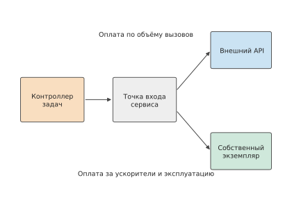
Рис. 11-39. Два способа использования сервиса модели для одной задачи и методы их тарификации. Внешний API взимает плату за фактическое потребление при вызовах, а самостоятельно развёрнутые реплики тарифицируются по зарезервированным устройствам и эксплуатационным расходам; на обоих путях стоимость относится к задаче и попытке. Входные данные разделяются на обычную обработку, создание кэша и чтение из кэша, а генерация учитывается отдельно.
Разделим входные данные одного вызова на не пересекающиеся между собой обычные входные данные \(I_u\), входные данные для создания кэша \(I_w\) и входные данные, прочитанные из кэша, \(I_h\). Пусть тарифицируемое число сгенерированных токенов равно \(O\), а соответствующие цены за миллион токенов — \(p_u,p_w,p_h,p_o\). Тогда
Каждый входной токен в рамках одного вызова относится только к одной из трёх категорий: обычным входным данным, созданию кэша или чтению из кэша. Если распределить возвращаемые сервисом сведения о потреблении (usage) по этим трём категориям, умножить каждое значение на соответствующую цену и сложить результаты, получится стоимость входных данных. Число сгенерированных токенов \(O\) представляет собой сумму токенов рассуждения и токенов видимого вывода.
Пример 11-6. Сколько можно сэкономить на входных данных, кэшируя общий префикс между раундами? В каждом раунде имеется общий префикс из 8 000 токенов и 2 000 токенов новых входных данных, которые не используются повторно. Согласно стандартным ценам Claude Sonnet 5, миллион обычных входных токенов стоит 2 доллара, первоначальное создание пятиминутного кэша — 2,5 доллара, а чтение из кэша — 0,2 доллара. При первом вызове кэш создаётся, а следующие девять вызовов полностью попадают в него до истечения срока действия. Без кэша стоимость входных данных за десять раундов составляет 0,20 доллара; с кэшем стоимость в долларах равна
В этом примере генерация и выполнение инструментов во всех десяти раундах остаются одинаковыми, поэтому вся разница в стоимости обусловлена входными данными. Первое использование кэша стоит 0,024 доллара, что на 0,004 доллара дороже обычной обработки стоимостью 0,020 доллара; каждый последующий раунд стоит лишь 0,0056 доллара, что на 0,0144 доллара дешевле обычной обработки. Поэтому надбавка за первоначальное создание окупается уже при втором обращении. При общем числе обращений \(n\) использование кэша выгоднее, если \(np_u>p_w+(n-1)p_h\). Чем дольше срок действия кэша, тем больше вероятность окупить дополнительные затраты на первоначальное создание за счёт повторных чтений.3
Размер экономии от кэширования зависит также от того, какие именно запросы попадают в кэш. Рассмотрим ещё два вызова: длина префикса одного составляет 1 000 токенов, другого — 9 000 токенов. Если в кэш попадает только короткий префикс, доля запросов с попаданием составляет 50%, но число прочитанных из кэша токенов — лишь 10% общей длины префиксов двух вызовов. Если в кэш попадает только длинный префикс, доля запросов с попаданием по-прежнему равна 50%, однако доля чтения возрастает до 90%. При тарификации по токенам второй случай позволяет сэкономить на обработке входных данных значительно больше, чем первый. Вес каждого попадания определяется длиной входных данных.
11.4.3 Очереди, ограничение частоты запросов и маршрутизация моделей¶
Повторное использование кэша возможно только тогда, когда запрос поступает на бэкенд, где сохранён соответствующий префикс. Поэтому выбор бэкенда влияет и на долю попаданий, и на время ожидания в очереди. Ради использования уже существующего кэша префикса иногда целесообразно подождать дольше. Предположим, очередь бэкенда A, на котором работает та же модель, занимает 200 ms, а обработка попавшего в кэш префикса — 50 ms; очередь бэкенда B занимает 20 ms, а обработка без попадания — 500 ms; общее сетевое время составляет 50 ms, а последующая генерация одинакова. До начала генерации A затрачивает 300 ms, а B — 570 ms, поэтому A опережает B на 270 ms. Попадание в кэш экономит 450 ms обработки, но добавляет 180 ms ожидания в очереди, что даёт ровно 270 ms чистого выигрыша. Когда время ожидания в очереди A возрастает до 470 ms, затраты времени до начала генерации становятся одинаковыми.
Указанные в начале главы 30 вызовов модели в секунду также ограничены доступной параллельной мощностью. Если один вызов длится 9 секунд, одновременно выполняется в среднем 270 вызовов; при сокращении до 6 секунд их число уменьшается до 180. Однако сокращение времени обслуживания достигается за счёт уменьшения batch для каждой реплики: каждая реплика одновременно обслуживает лишь 16 сессий, поэтому 10 реплик располагают только 160 слотами параллельного выполнения и не могут вместить 180 вызовов — число реплик необходимо увеличить до 12, то есть до 48 карт B200. Затраты времени GPU на один вызов также возрастают с \(4\times9/32=1.125\) B200·с до \(4\times6/16=1.5\) B200·с. API с оплатой по фактическому потреблению обычно отдельно ограничивают количество запросов и количество токенов за единицу времени; если объём входных или выходных данных каждого вызова увеличивается, лимит токенов может быть исчерпан раньше лимита запросов. При выборе сервиса модели необходимо отдельно сравнивать время ожидания запросов в очереди, число параллельных вызовов и пропускную способность обработки токенов, чтобы определить фактор, ограничивающий скорость выполнения задач.
Пример 11-7. Когда попадания в кэш и вероятность успеха компенсируют более высокую цену сервиса? Отправим в Claude Haiku 4.5, обозначенный A, и Claude Sonnet 5, обозначенный B, по 1 000 задач, каждая из которых требует одного вызова. Каждый вызов получает 20 000 входных токенов, включая общий префикс из 19 000 токенов и 1 000 токенов новых входных данных. Кэш префикса уже создан, дополнительных затрат на создание и хранение кэша, инструменты и прогрев нет, а вероятность прохождения приёмки задачей не зависит от попадания в кэш. Возьмём стандартные цены API обеих моделей; число токенов рассуждения и вероятность успеха заданы в условии.13
| Параметр | A: Haiku 4.5 | B: Sonnet 5 |
|---|---|---|
| Цена обычных входных данных, долларов за миллион токенов | 1 | 2 |
| Цена чтения из кэша, долларов за миллион токенов | 0.1 | 0.2 |
| Цена генерации, долларов за миллион токенов | 5 | 10 |
| Фактическое число токенов рассуждения | 1 800 | 100 |
| Число токенов видимого вывода | 200 | 200 |
| Вероятность успеха при одинаковых правилах приёмки | 0.80 | 0.98 |
Префикс A всегда попадает в кэш, стоимость каждого вызова составляет 0,0129 доллара, а средняя стоимость успешно выполненной задачи — \(0.0129/0.8\approx0.0161\) доллара. При попадании в кэш стоимость каждого вызова B составляет 0,0088 доллара, а без попадания — 0,0430 доллара. Обозначим долю запросов B с попаданием в кэш через \(h\). Тогда
Приравняв среднюю стоимость B к средней стоимости A, получим \(h\approx79.5\%\). Все цены за токен у B вдвое выше, чем у A, но при высокой доле попаданий B оказывается дешевле благодаря меньшему фактическому объёму генерации и более высокой вероятности успеха. Если доля попаданий снижается до 50%, стоимость успешной задачи B возрастает примерно до 0,0264 доллара, и A становится дешевле.
Теперь дополнительно потребуем, чтобы как минимум 90% отправленных задач прошли приёмку не более чем за 6 секунд. Пусть полная продолжительность запроса составляет 10 секунд для A, 4 секунды при попадании B в кэш и 12 секунд при отсутствии попадания; во всех случаях время уже включает ожидание в очереди и генерацию. A не укладывается в срок; для B должно выполняться \(0.98h\geq0.90\), то есть \(h\geq91.8\%\).
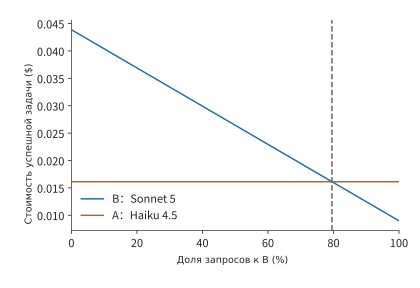
Рис. 11-40. Стоимость успешной задачи B уменьшается с ростом доли попаданий и примерно при 79,5% становится равна стоимости A. Сначала общая стоимость каждого варианта делится на соответствующее число успешно выполненных задач; на этом рисунке сравнивается только стоимость, а ограничение по сроку отдельно добавлено на следующем рисунке.
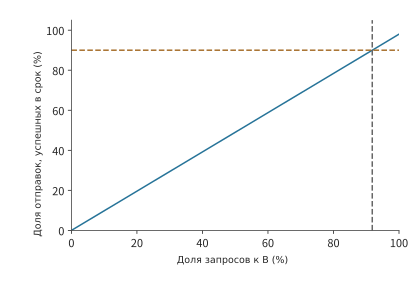
Рис. 11-41. Только четырёхсекундный путь B с попаданием укладывается в шестисекундный срок; с учётом 98-процентной вероятности прохождения приёмки доля своевременно выполненных задач равна 0.98h. Для достижения целевого значения 90% требуется h не менее примерно 91,8%.
В этом примере длина префикса каждого вызова составляет 19 000 токенов, поэтому доля запросов с попаданием \(h\) также равна доле попавших в кэш токенов внутри префикса; относительно полных входных данных объёмом 20 000 токенов доля чтения из кэша составляет \(0.95h\). Точка пересечения стоимости находится примерно на уровне 79,5%, а пороговое бизнес-требование — примерно на уровне 91,8%. При движении вправо от низкой доли попаданий B сначала становится дешевле и лишь затем начинает удовлетворять требованию своевременного выполнения. Если нанести целевой показатель сервиса на кривую стоимости, можно непосредственно определить итоговую область допустимых вариантов.
11.4.4 Сравнение стоимости собственного сервиса, API с оплатой по фактическому потреблению и подписки¶
Сравнение маршрутизации позволяет определить, какие сервисы моделей одновременно удовлетворяют требованиям к качеству, стоимости и срокам. После выбора сервиса необходимо решить, развёртывать ли его самостоятельно, оплачивать каждый вызов или приобрести подписку. Выбор модели определяет сервисы, необходимые для каждой задачи, а способ закупки — порядок их оплаты. Для собственной инфраструктуры сначала оплачиваются оборудование и зарезервированные мощности, после чего расходы распределяются между задачами; API с оплатой по фактическому потреблению тарифицируется по вызовам; подписка оплачивается ежемесячно или с другой периодичностью и предоставляет право пользоваться соответствующим продуктом. Общий вопрос для всех трёх способов: как меняются совокупные расходы с объёмом использования при одинаковом количестве задач.
Пусть за фиксированный учётный период зарезервированные мощности и постоянные расходы собственного сервиса составляют \(F\), а дополнительные затраты на каждую отправленную задачу — \(v\); средняя стоимость одной задачи через API равна \(c\). Если вероятность успеха одинакова и производительности обоих вариантов достаточно, собственный сервис оказывается выгоднее при \(N\) задачах, когда
Если \(c\leq v\), стоимость одной задачи через API уже не превышает дополнительные затраты собственного сервиса, а постоянные вложения положительны, поэтому API выгоднее при любом объёме использования. Если вероятности успеха различаются, то после деления соответственно на \(Np_{\mathrm{self}}\) и \(Np_{\mathrm{api}}\) сравнивается уже стоимость одной успешно выполненной задачи.
Ниже сравним два способа оплаты для одной модели и одного типа GPU: batch size и качество выполнения задач в обоих случаях одинаковы, различается только метод тарификации. В варианте с резервированием арендуются четыре карты на месяц, то есть на 720 часов, по публичной цене B200 Pod облачной GPU-платформы Runpod — 6,79 доллара за карту в час. B200 Pod представляет собой тарифицируемый по часам экземпляр GPU в монопольном использовании. Получаем \(F=4\times720\times6.79=19{,}555.2\) доллара; поскольку GPU уже оплачен на весь месяц, дополнительные затраты \(v\) на одну задачу равны нулю. В варианте с оплатой по фактическому потреблению используется B200 Serverless worker той же платформы с посекундной тарификацией по цене 8,64 доллара за карту в час. Как и API с оплатой по фактическому потреблению, он оплачивается по мере использования и также выполняет batch из 32 сессий. Для задачи из начала главы каждый из трёх вызовов занимает 1,125 B200·с, поэтому стоимость по фактическому потреблению составляет \(c=3\times1.125\times8.64/3600=0.0081\) доллара.
Равенство стоимости достигается при объёме \(19{,}555.2/0.0081\approx2{,}41\) млн задач. Каждая задача занимает одну сессию на 27 секунд, поэтому четыре B200 за месяц могут обработать не более \(32\times2{,}592{,}000/27=3{,}072\) млн задач. Точка пересечения соответствует загрузке примерно 78,6%, что в точности равно отношению двух цен \(6.79/8.64\). При 1 млн задач резервирование по-прежнему стоит 19 555,2 доллара, тогда как оплата по фактическому потреблению — лишь 8 100 долларов; при 3 млн задач оплата по фактическому потреблению составляет 24 300 долларов, поэтому резервирование становится выгоднее. При малом объёме использования постоянные вложения трудно распределить между задачами, а при большом объёме они компенсируются меньшими дополнительными затратами.
На рис. 11-42 стоимость резервирования показана горизонтальной линией, высота которой определяется арендной платой за полный месяц, а правый конец — пределом производительности этой группы GPU; стоимость по фактическому потреблению начинается с нуля, а её наклон определяется временем GPU, затрачиваемым на одну задачу. После повышения эффективности выполнения те же четыре B200 могут обрабатывать больше задач в месяц, поэтому линия резервирования продлевается вправо, а наклон линии оплаты по фактическому потреблению уменьшается; точка пересечения по-прежнему соответствует той же загрузке, равной отношению двух цен.
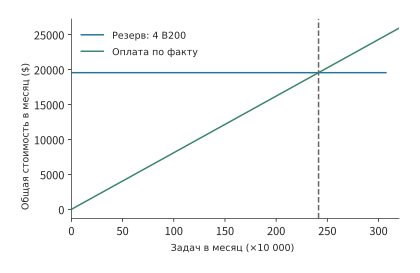
Рис. 11-42. Резервирование четырёх B200 на месяц стоит в общей сложности 19 555,2 доллара, а стоимость по фактическому потреблению составляет 0.0081N доллара, где N — число отправленных задач. Две линии пересекаются примерно на уровне 2,41 млн задач, что соответствует загрузке зарезервированных GPU около 78,6%; линия резервирования заканчивается на пределе производительности 3,072 млн задач в месяц.
Возможное повышение эффективности выполнения зависит от того, на что расходуется время. Снова рассмотрим развёртывание DeepSeek V4-Flash на четырёх B200, одновременно обслуживающее 32 сессии с контекстом в 200K токенов для каждой; число сессий и цена аренды GPU остаются неизменными. Каждый выходной токен требует примерно 25,3 ms, из которых 15,9 ms занимает поточный decode каждого токена, а остальные 9,4 ms — обработка входных данных и восстановление контекста. Если фактическая скорость этапа decode удваивается, время на один выходной токен снижается до \(15.9/2+9.4\approx17.4\) ms, общее ускорение составляет примерно 1,46 раза, а стоимость GPU на миллион выходных токенов уменьшается примерно с 6,0 до 4,1 доллара.14
Изначально около 63% времени на один выходной токен приходилось на decode, а остальные 37% оставались неизменными, поэтому двукратное ускорение decode способно сократить общее время лишь примерно на 31%. Даже если свести время decode к нулю, прочая обработка всё равно потребует 9,4 ms. Эти 9,4 ms необходимо дополнительно разделить по критерию из раздела 1.3.4: чтение KV и восстановление контекста являются обязательной работой, а рассчитанное по пропускной способности время образует новую нижнюю границу; планирование, копирование и преобразование форматов представляют собой устранимые программные издержки и потому являются областью для оптимизации. Для преодоления этого ограничения необходимо дополнительно оптимизировать обработку входных данных и восстановление контекста; только если одна и та же группа ускорителей будет генерировать больше токенов за единицу времени, фиксированную арендную плату удастся распределить на больший объём результата.
Платформа исправления кода из начала главы вызывает модель 30 раз в секунду. Быстрый сервис дополнительно расходует 0,375 B200·с на каждый вызов, что по цене Pod составляет около 0,00071 доллара, поэтому дополнительные расходы платформы достигают примерно 0,021 доллара в секунду; эти затраты сокращают продолжительность задачи с 30 до 21 секунды и позволяют уложиться в срок 24 секунды. В конце главы дополнительные расходы на модель будут сопоставлены с экономией на занятости окружения, чтобы сравнить полную стоимость задач для всех вариантов.
11.5 Восстановление полной задачи, расчёт затрат и масштабирование¶
11.5.1 Восстановление после сбоя инструмента и выбор модели¶
При выборе модели в разделе 11.4 в основном рассматривались случаи успешного завершения вызова. В реальной эксплуатации необходимо также обрабатывать сбои вызовов, потерю результатов и ошибки инструментов. Если контроллер не получил подтверждение завершения тестов, он не может различить две ситуации: тесты ещё не завершены либо тесты уже завершены, но подтверждение потеряно.
При восстановлении контроллер сначала запрашивает сохранённый результат и сверяет идентификатор операции и версию входного файла. Если результат существует, выполнение можно продолжить; если нет, контроллер определяет, допустима ли повторная попытка. Идемпотентной называется операция, у которой при повторных вызовах с одним и тем же идентификатором итоговый бизнес-эффект совпадает с эффектом однократного вызова. Повторное выполнение запросов только для чтения или идемпотентных операций обычно не вызывает проблем; однако повторный вызов внешнего платежа, создания ресурса или отправки сообщения может привести к фактическому двукратному выполнению одной операции, поэтому целевая система должна поддерживать идентификаторы операций, транзакции или компенсацию.
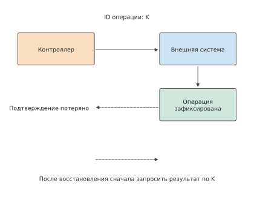
Рисунок 11-43. Внешняя система выполнила и зафиксировала операцию K, но подтверждение потерялось. Восстановление среды не отменяет результат внешней операции; контроллер запрашивает результат с тем же идентификатором операции и продолжает задачу. Сплошные линии обозначают запрос и выполнение, пунктирные — подтверждение и запрос при восстановлении.
Предположим, что однократное выполнение инструмента требует 3 CPU·с, а результат отправлен дважды. Если получатель устраняет дубликаты по идентификатору операции, совокупное процессорное время останется равным 3 секундам; если же из-за потери подтверждения контроллер выполнит операцию повторно, оно вырастет до 6 секунд. В обоих случаях в итоге может остаться лишь один результат, но расход ресурсов будет различаться. Устранение дубликатов сообщений решает проблему первого типа; для предотвращения повторения второго типа нужны сохранённые результаты и идемпотентный протокол целевой системы. Операция, уже зафиксированная вне среды, сохраняется и после восстановления из снимка, поэтому процесс восстановления должен сначала запросить её статус фиксации.15
Однако нормальный возврат запроса ещё не означает, что при восстановлении обязательно удастся найти его запись. Традиционные операционные системы также различают «запись завершена» и «данные сохранены в постоянном хранилище». Например, при обычной буферизованной записи в файл к моменту возврата write() данные могут всё ещё находиться в страничном кэше ядра: программа продолжает вычисления, а операционная система записывает их в фоновом режиме. Если программа обязана дождаться сохранения данных, прежде чем продолжить, ей нужно вызвать fsync(), дождаться записи данных файла и необходимых метаданных на устройство хранения и проверить успешность операции.16
Для среды выполнения AI-агента также необходимо чётко определить, что гарантируется при сообщении вызывающей стороне о завершении: только генерация ответа либо сохранение сообщения, результатов инструментов и позиции восстановления. Эти соглашения образуют семантику долговечности. Вызвать fsync() только для журнала чата недостаточно, поскольку необходимые для восстановления сведения могут храниться раздельно в журнале, рабочем каталоге и внешней базе данных; контроллер должен также проверить согласованность операций в сообщениях, файлов в каталоге и результатов в базе данных.
Здесь сохранение выполняется по итерациям цикла ReAct: каждая итерация включает один вывод модели, инициированные им вызовы инструментов и возвращённые ими результаты и может содержать несколько сообщений. Контроллер добавляет запись этой итерации в локальный файл JSONL и переходит к следующей итерации лишь после подтверждения успешного сохранения всей текущей; при ошибке сохранения выполнение немедленно прерывается. Поэтому локальное выполнение не продолжится с сохранением последующих итераций после ошибки сохранения одной из них. Для «успешного сохранения» также необходимо указать, какой вид отказа оно способно пережить: запись в локальный страничный кэш, завершение локального fsync() и получение подтверждения сохранения в облаке дают разные гарантии. Локальный файл позволяет восстановиться после перезапуска процесса, но не обязательно поможет при недоступности всей машины вместе с её диском.
Для уменьшения ожидания можно сначала сохранять каждую итерацию локально, а затем в фоновом режиме загружать добавленные в ней записи. Предположим, что после ошибки загрузки повторная попытка пока не выполняется, а локальное выполнение не прерывается: на первой итерации запускаются тесты и получается результат с ошибкой, на второй изменяется код и получается подтверждение инструмента, на третьей тесты запускаются повторно и возвращают новый результат. Записи всех трёх итераций сохранены в локальном JSONL, но загрузка второй завершилась с ошибкой, а третьей — успешно (рисунок 11-44). В результате локальная история полна, но в облаке отсутствуют вывод модели и результаты инструментов второй итерации. Если после этого локальная машина станет недоступна, при восстановлении на другой машине только из облачных записей возникнет этот пробел. Данный пример неприменим, если при каждой загрузке отправляется полный снимок, содержащий все предыдущие итерации, либо программа загрузки обязана сначала восполнить отсутствующие записи.
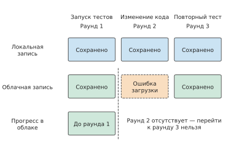
Рисунок 11-44. Исходное состояние сохранено локально и в облаке, каждый столбец представляет одну итерацию ReAct. Каждая итерация сначала сохраняется локально, затем добавленные в ней записи асинхронно загружаются; в этом примере после ошибки загрузки разрешено продолжать выполнение и загружать последующие итерации. После ошибки загрузки второй итерации облачная история остаётся полной лишь до первой, даже если третья успешно загружена. Горизонтальное расположение показывает порядок итераций, а не длительность.
При таком асинхронном сохранении контроллер должен раздельно отслеживать ход локального и облачного сохранения. В облаке нужно записывать не только последнюю полученную итерацию, но и номер итерации, до которой история непрерывно сохранена от исходной точки. Успешная загрузка третьей итерации не позволяет передвинуть позицию непрерывного сохранения с первой на третью; подтвердить полноту облачной истории до третьей итерации можно лишь после восполнения второй либо восстановления из полной локальной копии и последующей проверки.
То же относится к удалению старых журналов. Чтобы удалить записи первых двух итераций, сначала необходимо сохранить полное состояние, позволяющее восстановиться до конца второй итерации, и зафиксировать это состояние вместе с соответствующим номером итерации. Если при восстановлении не удаётся найти ни полный предшествующий журнал, ни это состояние, следует вернуть incomplete, даже если весь оставшийся журнал успешно прочитан: оснований подтвердить полноту истории недостаточно. Если интерфейс допускает восстановление по позиции сообщения, необходимо также убедиться, что она соответствует полностью сохранённой итерации, и сверить версию рабочего каталога; если позиции внутри итерации не сохранялись отдельно, обещать восстановление до них нельзя. Зафиксированные во внешних системах операции также не отменяются при откате сообщений.17
Для задачи исправления кода из этой главы можно заимствовать подход транзакций баз данных и фиксировать итерацию «решение модели — выполнение инструмента — сохранение результата» как единое целое. Контроллер отмечает итерацию как зафиксированную только после успешного сохранения сообщения модели, результатов инструментов и версий связанных файлов; после перезапуска выполнение продолжается с результата последней полностью зафиксированной итерации. Это одно из направлений исследований транзакций агентов (agent transaction): реализация в процессе работы агента атомарности, согласованности, изоляции и долговечности, то есть свойств ACID баз данных.18 Если в ходе итерации вызывается внешний сервис, он должен поддерживать идентификаторы операций, идемпотентный интерфейс или компенсационную обработку; одной локальной отметки «зафиксировано» недостаточно, чтобы гарантировать ровно однократное выполнение внешней операции.
Чем чаще выполняется сохранение, тем меньше работы обычно приходится повторять после сбоя, но тем выше накладные расходы при нормальном выполнении. Рассмотрим небольшой пример: последовательно выполняются 100 запросов, каждый занимает 200 мс; каждая фиксация в постоянном хранилище имеет постоянные накладные расходы 8 мс, а запись данных одного запроса требует ещё 2 мс. Предположим, что на время фиксации обработка запросов приостанавливается, а прочими расходами можно пренебречь. Получим следующие результаты.
| Способ сохранения | Общее время сохранения | Общее время без сбоев | Максимальное время повторных вычислений после сбоя |
|---|---|---|---|
| Фиксация после каждого запроса | \(100(8+2)=1000\) мс | 21 с | 0,2 с |
| Фиксация после каждых 10 запросов | \(10(8+10\times2)=280\) мс | 20,28 с | 2 с |
Совместная фиксация каждых 10 запросов экономит 0,72 с при нормальном выполнении; однако при сбое непосредственно перед фиксацией придётся повторно выполнить все 10 запросов, затратив 2 секунды вычислений. Здесь предполагается, что каждая фиксация либо полностью успешна, либо не оказывает никакого эффекта, все незафиксированные запросы требуется повторить, а инструменты допускают безопасный повторный вызов; время восстановления среды и повторного сохранения в таблице не учитывается. При асинхронном сохранении контроллер может записывать уже полученные результаты одновременно с обработкой последующих запросов. Объём повторной работы после сбоя зависит от количества ещё не сохранённых к тому моменту записей. Поэтому при сравнении способов сохранения следует учитывать не только время выполнения задачи, но и число уже завершённых, однако не сохранённых запросов, а также проверять, до какой позиции в действительности удаётся восстановиться после перезапуска.
Здесь по-прежнему необходимо ответить на два вопроса, неоднократно рассматриваемых в книге: где размещаются данные и кто обязан ждать их сохранения. В разделе 11.2 среда инструментов освобождалась на время вызова модели для экономии памяти. Это допустимо, только если состояние, необходимое для следующей итерации, уже сохранено вне среды либо может быть вычислено заново после потери. Если единственный экземпляр результата остаётся в памяти среды, контроллер обязан дождаться его сохранения перед освобождением среды, иначе после потери останется лишь выполнить работу заново. Поэтому при распределении ресурсов планировщик должен учитывать время ожидания сохранения состояния и стоимость повторной работы после сбоя.
После определения позиции, с которой можно продолжить, контроллер может также выбрать более мощную модель. Если исходная модель завершила две итерации, а исправление и результаты тестов полностью сохранены, новая модель сможет продолжить решение без повторения первых двух итераций. Тогда потребуется оплатить лишь следующий вызов модели, а вероятность успешного решения может повыситься. Вероятность успеха последующего исправления зависит от причины предыдущей неудачи. Поэтому ниже при вычислении вероятностей ветвей дерева восстановления они всегда задаются при условии, что задача уже достигла соответствующего узла.
11.5.2 Полная стоимость успешной задачи¶
Повторная попытка или переход на другую модель после сбоя требуют дополнительных расходов, поэтому цена одного вызова не показывает, сколько в действительности стоит завершение задачи. Необходимо сложить затраты на все успешные и неуспешные попытки, а затем разделить сумму на фактическое число завершённых задач. Пусть общие расходы за рассматриваемый период равны \(C_{\mathrm{all}}\), число задач, удовлетворяющих требованиям качества, равно \(N_q\), а число задач, завершённых качественно и в срок, равно \(N_{q,d}\). Тогда средняя стоимость одной успешной задачи и одной задачи, успешно завершённой в срок, соответственно равна
Неуспешные попытки также расходуют ресурсы модели и инструментов, поэтому их стоимость нельзя вычитать из общих расходов. Например, если десять задач в сумме стоили 1 доллар, а успешно завершились пять, фактические расходы платформы на одну завершённую задачу составят 0,2 доллара. Если учитывать только 0,5 доллара, потраченные на пять успешных попыток, получится 0,1 доллара — ровно половина расходов останется неучтённой.
Эту удельную стоимость можно предварительно оценить до развёртывания с помощью конечного дерева повторных попыток. Для пути \(\pi\) обозначим его вероятность через \(p_\pi\), а сумму затрат всех шагов — через \(c_\pi\); тогда \(E[C]=\sum_\pi p_\pi c_\pi\). Вероятность успеха равна сумме вероятностей всех путей, завершающихся успехом. Вероятность каждого узла следует вычислять с учётом предшествующих результатов выполнения; если после двух типов ошибок вероятности дальнейшего успеха различаются, их следует представить отдельными узлами.
Пример 11-8. Влияние локального исправления на вероятность успеха и долю превышений срока. Рассмотрим ещё один небольшой пример, в котором первая попытка занимает 10 секунд, и сравним следующую конечную стратегию восстановления. Для первой попытки используется Claude Sonnet 5 с 2 500 входными и 500 выходными токенами; по стандартному тарифу она стоит 0,010 доллара и занимает 10 секунд. В 80% случаев задача сразу завершается успешно, 12% переходят к локальному исправлению, а 8% — непосредственно к эскалации, то есть повторной попытке с более мощной моделью. Для локального исправления по-прежнему используется Sonnet 5 с 1 500 входными и 300 выходными токенами; оно дополнительно стоит 0,006 доллара и занимает 4 секунды, а условная вероятность успеха равна 60%. Остальные задачи переходят к эскалации. При эскалации используется Claude Opus 5: 5 долларов за миллион входных токенов и 25 долларов за миллион выходных токенов. Вызов с 3 000 входными и 600 выходными токенами дополнительно стоит 0,030 доллара, занимает 8 секунд и имеет условную вероятность успеха 98%. Срок в 20 секунд используется только для оценки и не приводит к принудительной остановке задачи.19
На рисунке 11-45 задача с успешным локальным исправлением завершается на 14-й секунде; путь с неудачным исправлением и последующей эскалацией занимает на 4 секунды больше, чем непосредственная эскалация. Поэтому даже после повышения общей вероятности успеха часть успешных результатов выходит за установленный срок.
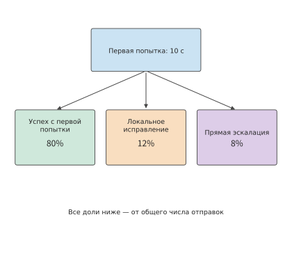
Рисунок 11-45. Через 10 с первая попытка разделяется на три исхода: успех, локальное исправление и непосредственная эскалация. Доли внутри блоков рассчитаны относительно всех отправленных задач; на следующем рисунке раскрываются условные ветви исправления.
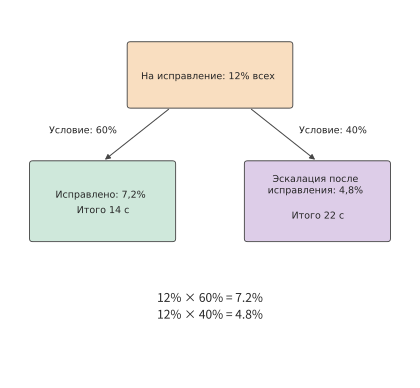
Рисунок 11-46. Увеличенный узел исправления: из 12% попавших сюда задач исправление успешно для 60%, что составляет 7,2% всех отправленных задач; 40% переходят к эскалации, что составляет 4,8% всех отправленных задач. Эскалация занимает ещё 8 с, поэтому совокупное время последнего пути равно 22 с.
Шесть возможных результатов выполнения приведены ниже. Указанная в каждой строке стоимость охватывает весь процесс выполнения, включая расходы на все предшествующие попытки.
| Процесс выполнения и результат | Вероятность | Полная стоимость / долл. | Время / с | Тесты пройдены в срок |
|---|---|---|---|---|
| Успех первой попытки | 0.80000 | 0.010 | 10 | Да |
| Первая попытка → успешное исправление | 0.07200 | 0.016 | 14 | Да |
| Первая попытка → исправление → успешная эскалация | 0.04704 | 0.046 | 22 | Нет |
| Первая попытка → исправление → неудачная эскалация | 0.00096 | 0.046 | 22 | Нет |
| Первая попытка → успешная эскалация | 0.07840 | 0.040 | 18 | Да |
| Первая попытка → неудачная эскалация | 0.00160 | 0.040 | 18 | Нет |
Расчёт можно пошагово выполнить для 1 000 отправленных задач. Первые попытки стоят 10 долларов, и около 800 задач сразу завершаются успешно. К локальному исправлению переходят 120 задач, что добавляет \(120\times0.006=0.72\) доллара; из них около 72 завершаются успешно. Оставшиеся примерно 48 задач вместе с 80 задачами, перешедшими непосредственно к эскалации, дают 128 эскалаций, дополнительно стоящих \(128\times0.030=3.84\) доллара. Общая стоимость составляет около 14,6 доллара, а в итоге успешно завершаются примерно 997 задач.
Путь с исправлением и последующей эскалацией занимает \(10+4+8=22\) секунды, превышая срок в 20 секунд. Около 47 задач проходят тесты, но завершаются с опозданием, поэтому число успешных задач, завершённых в срок, составляет примерно 950. Средняя стоимость задачи, прошедшей тесты, равна приблизительно 0,0146 доллара, а задачи, прошедшей тесты в срок, — приблизительно 0,0153 доллара. Если выполнять только первую попытку, стоимость составит \(10/800=0.0125\) доллара, но вероятность успеха будет равна лишь 80%. Восстановление повышает долю завершённых задач, но также увеличивает стоимость одного завершения. Если бизнес требует, чтобы не менее 95% отправленных задач успешно завершались в срок, эти дополнительные расходы необходимы; сравнение лишь стоимости одной попытки не учитывает прирост числа завершённых задач.
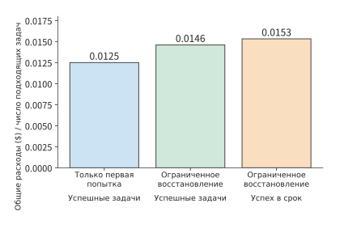
Рисунок 11-47. Стоимость и результаты после применения стратегии восстановления к одному и тому же набору отправленных задач. Для каждого столбца в числителе используются все расходы соответствующей стратегии, а знаменателем служит соответственно число задач, прошедших тесты, либо число задач, прошедших тесты в срок. При выполнении только первой попытки вероятность успеха равна 80%, а при конечной стратегии восстановления — приблизительно 99,7%; при этом около 95,0% отправленных задач завершаются успешно за 20 секунд. Вероятности ветвей, стоимость и время приведены в примере 11-8; срок используется для оценки, но не приводит к принудительной остановке выполнения.
После применения описанной стратегии восстановления доля успешных задач возрастает с 80% примерно до 99,7%, но около 4,7% отправленных задач завершаются лишь на 22-й секунде. При сроке в 20 секунд эти задачи расходуют ресурсы, но не учитываются среди завершённых вовремя. Если сократить только срок, используемый для оценки, процесс выполнения не изменится — просто меньше задач будут считаться успешно завершёнными в срок; если же ограничить число повторных попыток, контроллер выполнит меньше шагов, а расходы и вероятность успеха также изменятся.15
Помимо стратегии восстановления, необходимо учитывать влияние ускорения модели. После ускорения модели подготовка среды может перестать полностью перекрываться с вызовом модели и начать влиять на время завершения задачи. Предположим, что следующий вызов инструмента произойдёт обязательно, быстрой службе требуется ещё 6 секунд на генерацию, а шаблона нет на локальной машине и создание среды по холодному пути занимает около 2,7 секунды. Если начать создание среды одновременно с началом генерации модели, все 2,7 секунды подготовки полностью перекроются генерацией. Если этап модели сократится до 1 секунды, при том же моменте начала создания придётся дополнительно ждать около 1,7 секунды.24 Сначала ускорим только вызов модели, сохранив прежнюю стратегию подготовки; затем сравним стоимость трёх вариантов: более ранней подготовки, сохранения уже готовой среды и ожидания по требованию. При этом учтём заблаговременное занятие ресурсов и расходы на среду, подготовленную заранее, но в итоге не использованную.
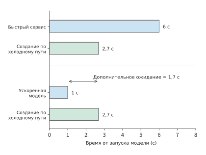
Рисунок 11-48. После ускорения модели создание среды становится источником ожидания перед началом выполнения инструмента. В обоих случаях создание среды начинается в нулевой момент; инструмент должен дождаться как решения модели, так и готовности среды. Горизонтальная ось показывает секунды.
При восстановлении требуется заново создать не только среду инструментов, но и состояние на стороне службы модели. В проектном задании этой главы время и стоимость вычисляются для V4-Flash; восстановление состояния модели рассматривается на примере отслеживаемого на протяжении книги сеанса V4.1 Flash, поскольку его глобальный KV можно получить, а локальное состояние SWA необходимо воссоздать повторным воспроизведением токенов в конце промпта (раздел 3.2.4). Пути восстановления этих двух частей различаются. Во время ожидания инструмента такой сеанс одновременно сохраняет две группы состояний: операционная система управляет процессом, файлами и средой, а служба модели — глобальным KV и локальным состоянием SWA. Для восстановления задачи эти две группы состояний требуется подготовить отдельно, а затем объединить при передаче результата инструмента в следующий вызов модели; результаты уже выполненных внешних операций подтверждаются запросом к целевой системе.25 Если подготовка среды и получение KV могут выполняться параллельно, длительность восстановления определяется более поздним из этих двух событий.
11.5.3 Выбор масштабирования CPU, GPU, памяти и квот службы¶
Ниже на основе заданного в начале главы срока завершения в 24 секунды выбираются служба модели и способ управления средой. Ранее были получены три результата: каждый вызов обычной службы занимает 9 секунд, поэтому три итерации требуют 30 секунд; каждый вызов быстрой службы занимает 6 секунд, поэтому три итерации требуют 21 секунду; повторное создание среды на каждой итерации снижает совокупное потребление памяти среды для одной задачи до 18 GiB·с, а подготовка дополнительно требует 0,3 секунды процессорного времени.
Пример 11-9. Как выбрать службу модели и способ управления средой, чтобы завершить задачу в срок с минимальными затратами? Сохраним условия из начала главы: каждые 0,1 секунды поступает одна задача, каждая выполняется в три итерации; платформа инструментов работает на одном сервере m5d.metal с 48 ядрами и примерно 358 GiB памяти, а служба модели располагает 10 существующими репликами V4-Flash на 40 GPU B200. Обе службы запускают одну и ту же модель, итоговая вероятность прохождения тестов равна 95%, а результат тестов не зависит от времени поступления задачи. Вызовы модели оплачиваются по занятому времени B200 по тарифу 6,79 доллара за GPU·ч: каждый вызов обычной службы занимает 1,125 B200·с и стоит около 0,00212 доллара; каждый вызов быстрой службы занимает 1,5 B200·с и стоит около 0,00283 доллара. CPU и память оплачиваются по опубликованным E2B тарифам на песочницы: 0,000014 доллара за CPU·с и 0,0000045 доллара за GiB·с, в обоих случаях по фактическому использованию. Стоимость сохранения файлов уже включена в выполнение инструментов каждой итерации; общие постоянные расходы платформы одинаковы для всех четырёх вариантов.20
Сначала исключим вариант «увеличить только CPU». Инструменты трёх итераций работают в общей сложности 3 секунды; даже при двукратном ускорении инструментов с обычной службой по-прежнему потребуется \(27+1.5=28.5\) секунды. Даже если сократить время инструментов до нуля, вызовы модели всё равно займут 27 секунд. Масштабирование CPU не способно сократить этот последовательный путь до 24 секунд.
Затем сравним стратегии управления средой. Подготовка при повторном создании среды на каждой итерации перекрывается с вызовом модели и не изменяет время завершения: с обычной службой оно по-прежнему равно 30 секундам, а после перехода на быструю службу суммарное время модели сокращается до 18 секунд и вместе с 3 секундами работы инструментов составляет 21 секунду. Поэтому при использовании быстрой службы установленный срок выдерживается как при постоянном сохранении среды, так и при её повторном создании на каждой итерации; далее необходимо сравнить ресурсы и стоимость.
На рисунке 11-49 варианты сначала отбираются по соблюдению срока: последняя итерация обычной модели завершается после установленного срока, а все три итерации быстрой модели — до его истечения. После этого достаточно сравнить стоимость двух стратегий управления средой при быстрой модели, одновременно проверив, не превышают ли они возможности платформы.
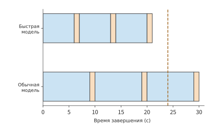
Рисунок 11-49. В обоих вариантах среда готовится во время вызова модели, а выполнение инструмента на каждой итерации занимает 1 секунду. После сокращения вызова модели с 9 до 6 секунд время завершения трёх итераций сдвигается с 30-й на 21-ю секунду — из-за пределов 24-секундного срока в его пределы.
| Вариант | Время завершения / с | Совокупное процессорное время / CPU·с | Совокупное потребление памяти на задачу / GiB·с | Средняя память / GiB | Стоимость тысячи отправленных задач / долл. | Доля задач, прошедших тесты в срок |
|---|---|---|---|---|---|---|
| Обычная служба + постоянно сохраняемая среда | 30 | 3 | 60 | 600 | 6.68 | 0 |
| Обычная служба + повторное создание среды на каждой итерации | 30 | 3.3 | 18 | 180 | 6.49 | 0 |
| Быстрая служба + постоянно сохраняемая среда | 21 | 3 | 42 | 420 | 8.72 | 95% |
| Быстрая служба + повторное создание среды на каждой итерации | 21 | 3.3 | 18 | 180 | 8.61 | 95% |
Рассмотрим последнюю строку. Три вызова модели в общей сложности занимают \(3\times1.5=4.5\) B200·с и стоят около 0,0084875 доллара; стоимость CPU равна \(3.3\times0.000014=0.0000462\) доллара, стоимость памяти — \(18\times0.0000045=0.000081\) доллара. Итого получается около 0,0086147 доллара, то есть 8,61 доллара за тысячу задач. Стоимость модели превышает 98% общих расходов, поэтому основное преимущество повторного создания среды на каждой итерации заключается не в цене, а в экономии ресурсов. При поступлении 10 задач в секунду выполнение инструментов и подготовка среды в среднем используют 33 ядра CPU и 180 GiB памяти, что укладывается в возможности m5d.metal; быстрой службе с постоянно сохраняемой средой требуется 420 GiB, поэтому данный сервер её не вмещает. В среднем служба модели одновременно обрабатывает 180 вызовов; каждая реплика быстрой службы поддерживает лишь 16 сеансов, поэтому нужны 12 реплик, то есть на 2 больше имеющихся.
После проверки соответствия средней потребности выбранного варианта доступным ресурсам необходимо убедиться, что все этапы можно запланировать в срок. При равномерном поступлении задач можно непосредственно составить расписание, соблюдающее ограничения ресурсов. Для быстрой службы, если отсчитывать время от момента поступления каждой задачи, среда готовится соответственно на интервалах 4–6, 11–13 и 18–20 секунд, а инструменты запускаются на интервалах 6–7, 13–14 и 20–21 секунд; для каждой задачи подготовка на каждой итерации в общей сложности использует 0,1 секунды процессорного времени, равномерно распределённого по двум секундам. Поскольку каждые 0,1 секунды поступает одна задача, после выхода в установившийся режим выполнение инструментов каждой итерации занимает по 10 ядер, а подготовка каждой итерации — по одному ядру; одновременно активно не более чем около 90 сред, использующих в общей сложности 180 GiB. На каждом из трёх этапов вызова модели в обработке в среднем находится по 60 вызовов, то есть всего 180 одновременных вызовов; 12 быстрых реплик предоставляют 192 параллельных слота. Такое расписание соблюдает зависимости между этапами и не превышает возможности платформы.
Следовательно, следует выбрать быструю службу, повторно создавать среду на каждой итерации, выполнять подготовку во время вызова модели и увеличить число реплик модели с 10 до 12. Этот вариант позволяет выполнить требование в 24 секунды на существующем сервере инструментов и является единственным из четырёх, который одновременно укладывается в срок и не превышает возможности данного сервера. Средняя стоимость тысячи задач, прошедших тесты в срок, составляет около \(8.61/0.95\approx9.07\) доллара; быстрая служба с постоянно сохраняемой средой даже при добавлении памяти будет стоить около \(8.72/0.95\approx9.18\) доллара, поэтому повторное создание среды на каждой итерации снижает эту стоимость лишь примерно на 1,2%. Обычная служба с повторным созданием среды на каждой итерации дешевле, но даже успешно прошедшие тесты задачи завершаются после установленного срока.
В разделе 11.5.2 также показано, что добавление повторных попыток изменяет долю задач, завершённых в срок. Здесь обычная задача завершается на 21-й секунде, поэтому до истечения срока остаётся лишь 3 секунды; если после итоговой неудачи добавить локальное исправление продолжительностью 4 секунды, результат появится только на 25-й секунде. Поэтому в данной задаче выполнение заканчивается после трёх итераций, а задачи, не прошедшие тесты, сразу возвращают результат с ошибкой. Если бизнес увеличит срок до 25 секунд, локальное исправление сможет увеличить число успешных задач, завершённых вовремя; тогда его условную вероятность успеха и дополнительные ресурсы следует добавить в дерево восстановления.
Этот выбор основан на условии, что каждый вызов модели занимает 6 секунд. При дальнейшем ускорении модели интервалы простоя, на которых можно освобождать память среды, также сократятся, поэтому стратегии управления средой потребуется сравнить заново. Выбор между сохранением и повторным созданием среды можно сделать по длительности ожидания, при которой стоимости этих вариантов равны. Пусть между двумя выполнениями инструментов требуется ждать модель \(G\) секунд. Содержание среды объёмом 2 GiB стоит \(2G\times0.0000045\) доллара; если уничтожить её и повторно подготовить в конце следующего вызова модели, память будет стоить \(2\times2\times0.0000045\) доллара, а необходимое для подготовки процессорное время — \(0.1\times0.000014\) доллара, то есть в сумме 0,0000194 доллара. Стоимости равны при \(G\approx2.16\) секунды. При ожидании 6 секунд среду следует создавать заново; когда ожидание сокращается до 2 секунд, сохранять среду становится выгоднее, а подготовка уже занимает всё доступное окно перекрытия. Дальнейшее ускорение модели изменит оптимальную стратегию управления средой.
Влияние локального ускорения на общее время можно также выразить законом Амдала из главы 1. Пусть доля ускоряемой части исходного времени равна \(f\), эта часть ускоряется в \(s\) раз, а длительность остальной части не изменяется. Тогда общее ускорение равно
В начале главы инструменты занимали лишь 10% времени, поэтому их двукратное ускорение даёт общее ускорение \(1/(0.9+0.1/2)\approx1.05\); вызовы модели занимали 90%, и их двукратное ускорение даёт \(1/(0.1+0.9/2)\approx1.82\). При одинаковом двукратном ускорении вызов модели экономит больше времени задачи, поскольку занимает большую долю времени выполнения.
В главе 12 для той же задачи и той же цели завершения будут дополнительно сопоставлены способы выполнения на конечном устройстве, на периферии сети и в облаке, а также проанализировано влияние времени передачи данных на время завершения задачи.
Упражнения и эксперименты¶
В следующих упражнениях используется нумерация материалов с 11-1 по 11-10. Основные задания 11-1, 11-2 и 11-10 образуют полное упражнение от требований до проектирования; исходные записи экспериментов и необязательные точки запуска приведены в сопроводительных материалах к главе.
- Эксперимент 11-1 (основной): расчёт параллелизма вызовов модели, CPU и памяти окружений для многораундовых задач. Платформа получает 8 задач в секунду: половина выполняется за два раунда, другая половина — за четыре. Каждый вызов модели занимает 6 секунд, а инструмент использует одно ядро CPU в течение 1 секунды. Найдите частоту вызовов модели, среднее количество параллельных вызовов модели и среднее количество используемых ядер CPU. Если каждое окружение занимает 2 GiB на протяжении всей задачи, найдите средний объём памяти, занимаемый окружениями платформы. Затем предположите, что окружение сохраняется только на двухсекундном этапе подготовки и односекундном этапе выполнения инструмента каждого раунда. Пересчитайте среднее потребление памяти и количество окружений, которые необходимо создавать в секунду.
- Эксперимент 11-2 (основной): как полное воссоздание окружения и восстановление из снимка влияют на ожидание инструмента и длительность использования памяти? В окружении находятся зависимости, которые можно загрузить заново, несохранённый буфер редактирования, сохранённый патч и зафиксированные внешние записи. Для каждого элемента укажите, откуда его можно восстановить после сбоя и какие данные нельзя восстановить напрямую.
Затем сравните два способа восстановления состояния, необходимого для следующего раунда: полное воссоздание окружения по холодному пути занимает 2,7 секунды; согласно документации E2B, сохранение снимка окружения объёмом 2 GiB занимает около 8 секунд, а восстановление из снимка — около 1 секунды. Примите момент завершения выполнения инструмента в предыдущем раунде за начало отсчёта. Следующий вызов модели начинается немедленно и занимает 9 секунд, после чего инструмент выполняется 1 секунду. При воссоздании исходное окружение освобождается в момент начала отсчёта; при использовании снимка его сохранение начинается в этот момент, а исходное окружение освобождается после завершения сохранения.
В обоих вариантах начинайте воссоздание или восстановление как можно позже, не откладывая следующее выполнение инструмента. Постройте временную шкалу и рассчитайте для каждого варианта суммарную длительность использования памяти окружением от начала отсчёта до завершения следующего выполнения инструмента. Время воссоздания, сохранения снимка, восстановления и выполнения инструмента учитывается как время резидентности окружения. 3. Эксперимент 11-3: сколько времени ожидания экономит предварительная подготовка окружения и сколько памяти она занимает? Создание окружения занимает 2 секунды, а точность предсказания окружения, необходимого для следующего вызова, равна 0,6. После поступления вызова окружение, соответствующее ошибочному прогнозу, отменяется; каждое предварительно подготавливаемое окружение занимает 2 GiB с начала подготовки. Для начала подготовки за 1, 2 и 4 секунды до поступления вызова рассчитайте ожидаемое время ожидания после его поступления и ожидаемое суммарное потребление памяти из-за ошибочной подготовки в GiB·с. При ошибочном прогнозе необходимое окружение создаётся заново после поступления вызова. Если точность возрастёт до 0,9, какие преимущества увеличатся, а какие потери уменьшатся? 4. Эксперимент 11-4: когда миграция предпочтительнее ожидания при разных целях завершения задач. Ресурс, необходимый новой задаче, занят существующей задачей; до его освобождения нужно ждать 12 секунд. Получив ресурс, новая задача выполняется локально за 20 секунд. Существующую задачу также можно перенести на другой узел и освободить локальный ресурс после завершения миграции; неизвестная длительность миграции равна \(m\), а время завершения существующей задачи увеличивается на \(m+2\) секунды по сравнению с вариантом без миграции. Сначала, стремясь завершить новую задачу как можно раньше, найдите условие, при котором миграция предпочтительнее ожидания. Затем решите задачу заново, минимизируя сумму времени ожидания ресурса новой задачей и задержки завершения существующей задачи. Объясните, почему для этих двух целей могут быть выбраны разные варианты. 5. Эксперимент 11-5: как время запуска влияет на полезную выработку краткоживущих экземпляров. Перед началом работы каждому новому экземпляру требуется в общей сложности 8 секунд на передачу и загрузку, после чего он работает со скоростью 100 полезных токенов в секунду. Время от начала запуска до освобождения трёх экземпляров составляет соответственно 10, 20 и 40 секунд. Рассчитайте выработку каждого экземпляра и долю фактического рабочего времени в общей продолжительности его существования. Если время подготовки сократить до 4 секунд, сравните прирост выработки каждого из трёх экземпляров и объясните, почему экземпляры с меньшим доступным временем более чувствительны. 6. Эксперимент 11-6: проверка влияния количества процессов и образцов из длинного хвоста на время завершения всего пакета. Три образца поступают на 0-й, 6-й и 12-й секундах, а их проверка занимает соответственно 10, 2 и 8 секунд. Сначала определите моменты начала и завершения проверки каждого образца, если имеется только один процесс-исполнитель и образцы обрабатываются в порядке поступления. Затем определите наиболее ранний момент завершения всего пакета при использовании двух процессов-исполнителей. Измените время проверки последнего образца на 80 секунд, определите, способно ли увеличение числа процессов-исполнителей сократить время завершения всего пакета, и объясните, какой образец определяет результат. 7. Эксперимент 11-7: как рассчитать стоимость и вероятность своевременного успеха, если попадание в кэш связано с корректностью результата? Используйте стоимость сервиса B из примера 11-7, но задайте вероятность успеха 99% при попадании в кэш и 90% при промахе. Выведите зависимость средней стоимости одной успешной задачи от доли попаданий в кэш, а также долю задач, проходящих проверку в течение 6 секунд. Найдите минимальную долю попаданий, необходимую для того, чтобы не менее 90% задач своевременно проходили проверку, и сравните результат с исходной моделью независимых вероятностей. 8. Эксперимент 11-8: точка равенства стоимости успешной задачи при собственной инфраструктуре и использовании API. Для собственной инфраструктуры по ценам Runpod резервируются четыре B200 на месяц общей стоимостью 19 555,2 доллара, запускается V4-Flash, дополнительные расходы на отдельные задачи отсутствуют, а вероятность успеха задачи равна 90%. При использовании API применяется Claude Sonnet 5: для каждой задачи выполняются три вызова, стоимость каждого совпадает со стоимостью сервиса B при попадании в кэш из примера 11-7 и равна 0,0088 доллара, а вероятность успеха составляет 98%. Сравните стоимость за один месяц, полностью отнеся фиксированные расходы на этот месяц. Считая, что оба варианта обладают достаточной производительностью для соблюдения сроков и обрабатывают одинаковое количество задач, найдите количество задач, при котором их средняя стоимость одной успешной задачи совпадает. Затем установите для собственной инфраструктуры предел в 500 тысяч задач в месяц и обсудите, как точка равенства влияет на решение о покупке. 9. Эксперимент 11-9: как срок выполнения задачи и досрочная остановка изменяют стоимость повторных попыток и вероятность успеха. Используйте условия примера 11-8, изменив срок на 14, 18 и 22 секунды, и для каждого случая найдите долю задач, своевременно проходящих проверку. Затем разработайте стратегию, которая прекращает выполнение, если оставшегося времени недостаточно для завершения следующего узла, заново рассчитайте ожидаемую стоимость и объясните отличие этой стратегии от простого изменения срока оценки. 10. Эксперимент 11-10 (основной): как масштабировать ресурсы и выбирать стратегию резидентности окружений после увеличения частоты поступления задач. Используйте условия примера 11-9, увеличив частоту поступления до 15 задач в секунду. Каждый вызов теперь выводит только 118 токенов, длительность быстрого вызова сервиса снижается примерно до 2,0 секунды, каждая задача по-прежнему выполняется за три раунда, а выполнение инструмента в каждом раунде по-прежнему занимает 1 секунду. Хосты инструментов, количество сеансов на реплику и цены за единицу остаются прежними. Сравните постоянную резидентность с воссозданием окружения в каждом раунде, определите, какие ресурсы и как минимум в каком объёме следует добавить, и укажите, нужно ли менять стратегию окружений. Наконец, измените режим поступления так, чтобы каждую секунду одновременно поступало 15 задач, постройте временную шкалу выполнения инструментов и отметьте пиковое параллельное использование CPU.
Итоги главы¶
На платформе из начала главы в среднем используются лишь 30 ядер CPU, однако среде требуется 600 GiB памяти, что превышает 358 GiB у m5d.metal. Причина в том, что за три раунда задача 27 секунд ожидает модель, а инструментальная среда всё это время продолжает занимать память. Если подготавливать среду во время вызова модели, суммарное потребление памяти на одну задачу снижается с 60 до 18 GiB·с, высвобождая значительный объём памяти; цена — лишь дополнительные 0,3 секунды процессорного времени на подготовку.
Это улучшение использует зависимости выполнения полной задачи. Определив доступное для подготовки время в период вызова модели, менеджер сред может заранее создать среду, чтобы процесс существовал только во время подготовки и выполнения инструментов; состояние, которое необходимо сохранять между раундами, записывается в постоянные файлы. Если сервис модели и платформа сред совместно планируют момент подготовки, ресурсы, ранее занятые на протяжении всей задачи, начинают выделяться поэтапно.
После высвобождения памяти задача всё ещё выполняется 30 секунд, поэтому вызов модели становится ключевым фактором для соблюдения предельного времени в 24 секунды. Если уменьшить число сеансов на каждую реплику V4-Flash с 32 до 16, длительность вызова сократится с 9 до 6 секунд, а трёхраундовой задачи — с 30 до 21 секунды; среднее число одновременных вызовов модели также снизится с 270 до 180. Цена — дополнительные 0,375 B200·с на каждый вызов и увеличение числа реплик с 10 до 12. В сочетании с пересозданием среды в каждом раунде одного экземпляра m5d.metal с 48 ядрами и 358 GiB памяти достаточно для поддержки заданного потока задач. После этого сравнивается стоимость вариантов, удовлетворяющих требованиям к качеству и сроку выполнения.
Тот же метод объясняет и организацию ресурсов для RL: группы заданий сначала получают согласованный набор ресурсов; временные экземпляры rollout заблаговременно завершают передачу и загрузку весов; сгенерированные образцы сразу отправляются на проверку, благодаря чему она может выполняться одновременно с последующей генерацией. При повторных попытках после сбоя необходимо суммировать объём работы всех попыток. Для анализа потребности в ресурсах нужно вычислить общий объём работы, выполненной задачей; при анализе времени завершения также необходимо учитывать, в каком порядке должна выполняться эта работа и какие её части могут выполняться одновременно. Только сочетание этих двух аспектов позволяет определить, полезно ли локальное улучшение для всей системы.
-
Фиксированный расчёт environment-resources и запись дочерних процессов инструментов для этой книги. Эксперимент с инструментами включает девять групп и 36 процессов; суммарное потребление памяти получено интегрированием выборок RSS по времени. ↩
-
Фиксированный бюджет environment-lifecycle различает общую и выделенную ёмкость, нижнюю границу времени последовательной передачи и результаты локального предварительного прогрева. В этой главе четыре способа загрузки содержимого сравниваются при фиксированном бюджете ёмкости. ↩
-
Исследование планирования, маршрутизации моделей и облачных окружений, охватывающее ASI, RLBoost, DistRS и SpecBox. Исследование ASI охватывает шесть месяцев и 155 410 GPU; доля распределения измеряет принадлежность устройств. Цена токенов взята из снимка страницы цен Claude API. ↩↩↩↩↩
-
Фиксированная архитектура E2B, документация по сохранению состояния (приостановка занимает около 4 секунд на каждый GiB памяти, восстановление — около 1 секунды; при приостановке сохраняется только файловая система), проверка поведения интерфейсов приостановки и снимков. E2B использует Firecracker. ↩↩↩↩
-
Виртуализация устройств и путь их предоставления из эталонного проекта операционной системы UB используются как пример реализации на основе QEMU/VFIO; здесь описывается конфигурация виртуальной машины с поддержкой сквозного подключения устройств. ↩
-
Локальное воспроизведение предварительного прогрева инструментов. Фактические вызовы, попадания прогнозов и границы окон выборки сохранены в исходных записях. ↩
-
DRF, Gavel и Pollux используются как материалы о механизмах планирования; совместное использование и размещение ресурсов дополнительно поясняет различие между доступностью ресурсов и предоставлением состояния. ↩
-
Исследование готовности весов и полезной выработки, содержащее условия статьи о RLBoost и фиксированные пути исходного кода PolyRL. Размер весов Qwen3-8B в байтах взят из индекса safetensors; сетевые интерфейсы 200/50 Gbit/s и цены экземпляров взяты из статьи о RLBoost. ↩↩
-
Эксперимент по восстановлению Qwen3-8B после вытеснения, отдельно фиксирующий количество токенов на этапах генерации, получения клиентом и восстановления. ↩
-
Эксперимент с тайм-аутами и освобождением ресурсов, запись планирования двух пакетов. В эксперименте используются контролируемые процессы CPU. ↩
-
Запись бюджета рассуждений и качества, проверка после увеличения бюджета рассуждений. В записях отдельно проверяется, завершилась ли генерация естественным образом и соответствует ли входное состояние требованиям. ↩
-
Фиксированные результаты routing-cost, результаты расчёта точки равенства и полный вывод. Цены Haiku 4.5 и Sonnet 5 взяты из снимка страницы цен Claude API; расчёт предполагает, что вероятность прохождения приёмочной проверки не зависит от попадания в кэш, а количество успешных задач рассчитывается по заданной вероятности. ↩
-
Цены B200 Pod в 6,79 доллара за карту в час и Serverless в 8,64 доллара за карту в час взяты из снимка страницы цен Runpod. Результат расчёта равен 25,317 ms, из которых 15,918 ms приходится на decode, а суммарно на остальные этапы — 9,399 ms. Здесь фиксированные накладные расходы каждого слоя и периодическое полное воссоздание заданы как входные условия; подробности приведены в базовом сравнении непрерывной работы агента, аудите оптимизации и анализе распределения времени и чувствительности. ↩
-
Записи задач и границы доказательств, инъекция сбоев в файловую очередь, запись статусов завершения задач. Эти записи используются соответственно для пояснения сохранения результатов, диагностики сбоев и расчёта стоимости. ↩↩
-
Страницы руководства Linux write(2) и fsync(2). Успешный вызов
write()не гарантирует запись данных в постоянное хранилище; вызывающая сторона также должна проверить фактическое количество записанных байтов и ошибки синхронизации. При создании или переименовании файла для сохранения записи каталога может дополнительно потребоваться выполнитьfsync()для каталога; сама по себе синхронизация файлов не обеспечивает транзакции над несколькими файлами. ↩ -
В препринте Safe to Resume? (2026) анализируется проблема несоответствия восстановленного состояния зависимостям, необходимым для продолжения выполнения. Числа, относящиеся к пропускам запросов и пакетной фиксации в этом разделе, являются учебными примерами, а не результатами измерений из статьи. ↩
-
В препринте Agentic Transaction (2026) предлагаются семантические атомарность, согласованность, изоляция и долговечность для агентов; в §2.2.4 рассматривается долговременное сохранение зафиксированного состояния, доказательств и метаданных восстановления. В этом разделе проектирование единицы фиксации поясняется на примере исправления кода, но из этого не следует, что произвольный вызов инструмента обладает гарантиями ACID. ↩
-
Точные результаты: вероятность успеха — 0,99744, вероятность своевременного прохождения проверки — 0,9504, ожидаемая стоимость одной задачи — 0,01456 доллара, суммарное время CPU — 3,376 секунды, резидентность — 23,008 GiB·с. В результатах расчёта отдельно указаны использование ресурсов и стоимость; заданная стоимость каждого узла уже является полной, поэтому повторно рассчитывать её по использованным ресурсам не требуется. См. конечный граф условий retry-paths. Стоимость каждого узла рассчитывается по стандартным ценам Claude и заданному в условии количеству токенов, вероятности заданы условием, а повторные попытки разворачиваются по конечному дереву выполнения; задачи, превысившие срок оценки, всё равно выполняются до конца. ↩
-
Сквозные входные данные платформы и примера 11-9, поэтапное расписание, стоимость, условие равенства стоимости и повторные расчёты приведены в сквозных данных проектирования и программе проверки. Время вызова модели основано на приведённой в книге оценке работы DeepSeek V4-Flash на четырёх B200 с контекстом 200K на сеанс: при 32 сеансах на реплику вывод одного токена занимает 25,3 ms, а при 16 сеансах — 16,9 ms; оба значения включают распределённые затраты на обработку входных данных и воссоздание контекста (результаты сравнения, полные данные). Вызов с 355 токенами занимает соответственно около 8,99 s и 6,01 s; в проекте используются значения 9 s и 6 s. Цена B200 в 6,79 доллара за карту в час взята из снимка страницы цен Runpod. 48 ядер m5d.metal при отключённой многопоточности и 384 GB памяти взяты из тестового окружения, описанного в разделе 5 статьи о Firecracker; конфигурация 1 vCPU и 2 GiB, а также цены CPU и памяти взяты из снимка страницы цен E2B. Подготовка по горячему пути в совокупности занимает 2 секунды и 0,1 CPU·с, а вероятность прохождения приёмочной проверки равна 95% — эти значения заданы условием; сохранение результата и очистка рабочего состояния включены в одну секунду выполнения инструмента. Пример с ёмкостью шаблона отдельно поясняет загрузку содержимого. ↩↩↩
-
Характеристики системы DGX H100 (два Xeon Platinum 8480C, всего 112 ядер); характеристики системы DGX A100 (таблица 10 приложения A, два EPYC 7742, всего 128 ядер). ↩
-
Agache и др., AWS, Firecracker: Lightweight Virtualization for Serverless Applications, NSDI 2020. ↩
-
DeepSeek-AI и Университет Цинхуа, DeepSeek Elastic Compute (DSec): A Sandbox Infrastructure for Effective Agentic Training at Scale, arXiv 2609.22978, 2026 (PDF). Статистика нагрузки приведена в §2.4 и §4; серверная часть и изоляция — в §2.2, §3.3 и §6.4–6.5; загрузка по требованию, совместное использование и освобождение памяти, а также QoS CPU — в §5.2–5.3, §8.2 и §8.4–8.5; размещение и серверная часть проверки на GPU — в §7; распределение ответственности за приостановку и цикл агента — в §6.2–6.3. Пересчёты количества песочниц, скорости их создания на каждом узле и преимуществ приостановки приведены в заметках по этому примеру. ↩↩↩↩↩↩↩↩↩↩
-
Повторный расчёт по каждому условию сравнения и программа расчёта для этой главы. ↩
-
Официальный технический отчёт DeepSeek V4.1, разделы 1, 2, 3 и 6; фиксированные условия и повторный расчёт межглавного сеанса. ↩